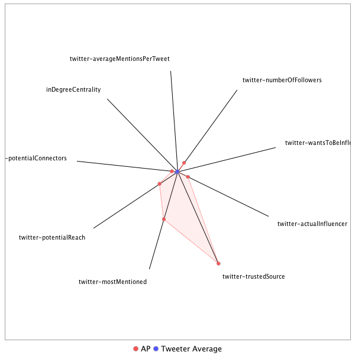

This tweeter has been identified as an influencer. Its target audience and hashtag and word usage are analyzed below.
Basic Statistics
Number of direct followers 1.1026e+07 The peak number of followers that the tweeter had during any time period. Number of retweeters 505 Number of agents that retweeted the key influencer. Number of secondary followers 52207376 The sum of the followers of those who retweeted the key influencer.
Measure Values of Other Influencers node versus Tweeter Average
This compares the measure values of the key influencer with the average values across all tweeters. For each measure line, the center-point means zero and the end-point means the maximum score across all tweeters.

Where was the influencer?
The agent is not recorded as being in any locations. Either he tweeted without geo-tags or we have no information about the tweets he sent.
The agent and retweeters were in 119 different locations.

What hashtags did the influencer use?
This displays the top ranked hashtags that the influencer and its retweeters used.
Rank hashtag Count 1 BREAKING 1071 2 Comey 1068 3 AHCA 962 4 Trump 922 5 Russia 815 6 pharma 640 7 ParisAgreement 569 8 TrumpCare 470 9 Obamacare 459 10 FDA 418 11 ComeyHearing 414 12 SCOTUS 410 13 biotech 385 14 mtal 381 15 ACA 380 16 ISIS 371 17 Qatar 362 18 GA06 350 19 Manchester 349 20 ge2017 343 21 Syria 315 22 TheLead 306 23 MemorialDayWeekend 261 24 Iran 255 25 healthcare 240 26 NIH 234 27 VAGov 228 28 adopt 220 29 ComeyDay 218 30 ComeyTestimony 218 31 spellingbee 214 32 ComeyFiring 206 33 climatechange 194 34 LondonBridge 189 35 drugprices 189 36 MemorialDay 188 37 JamesComey 182 38 CNNsotu 178 39 AdoptDontShop 170 40 dog 169 41 Caps 168 42 ParisAccord 162 43 TrumpBudget 161 44 Afghanistan 160 45 covfefe 159 46 AMR 152 47 CongressionalBaseballGame 152 48 China 149 49 wmata 149 50 NorthKorea 148 51 FBI 144 52 ForTheRecord 139 53 Nats 134 54 potusabroad 133 55 NAFTA 130 56 netneutrality 128 57 worldreligiontour 128 58 NYC 127 59 fakenews 127 60 US 126 61 Israel 120 62 climate 119 63 NATO 117 64 SessionsHearing 115 65 Alexandria 112 66 Cuba 110 67 London 110 68 gapol 109 69 travelban 108 70 FF 106 71 Turkey 106 72 ksleg 106 73 EWA17 104 74 cat 103 75 FOIA 102 76 Saudi 102 77 drugpricing 99 78 DC 98 79 cbntrumptravels 98 80 trumprussia 98 81 yemen 97 82 FBIDirector 96 83 GrenfellTower 96 84 alexandriashooting 96 85 MTpol 95 86 ThisIsGoingWell 95 87 CDC 92 88 Medicaid 92 89 DPRK 91 90 ManchesterBombing 90 91 ThisWeek 90 92 omnibus 90 93 rescue 88 94 RiyadhSummit 87 95 txlege 87 96 SaudiArabia 85 97 Sessions 84 98 Tillerson 84 99 Venezuela 84 100 Iraq 83
Tweet List
This displays all of the tweets of the influencer ordered from earliest to latest. Click on a tweet to see its status in Twitter.
Number Tweet ID Date Message 1 859781572962258944 2017-05-03 10:47:55-04 BREAKING: FBI Director says he thought concealing discovery of new Clinton emails before election would have been `catastrophic' 2 859483062484205569 2017-05-02 15:01:45-04 BREAKING: The Kremlin says Putin and Trump agreed during phone call to step up U.S.-Russian diplomatic efforts on Syria. 3 860624255083479040 2017-05-05 18:36:26-04 BREAKING: Texas officer charged with murder in shooting of black 15-year-old in car leaving party, arrest warrant issued. 4 862342731498127361 2017-05-10 12:25:03-04 BREAKING: AP sources: In days before firing, Comey told lawmakers he asked Justice Dept for more resources for Russia probe. 5 861662101856825344 2017-05-08 15:20:28-04 BREAKING: Ex-Attorney General Yates says she alerted Trump White House that Flynn "essentially could be blackmailed" by Russians. 6 861903571033436160 2017-05-09 07:19:59-04 South Korea exit poll of voters in presidential election sees victory for liberal Moon; official results hours away. https://t.co/rj0VZT65oo 7 861986415579721728 2017-05-09 12:49:11-04 Portion of tunnel collapses at Hanford nuclear site in Washington state; no radiation released, officials say. https://t.co/w1PjFbFbPn 8 860979243873947649 2017-05-06 18:07:02-04 Nigeria official says 83 Chibok girls released. https://t.co/63M8pBivDM 9 860497273817636864 2017-05-05 10:11:52-04 US military says killing of service member in Somalia appears to be first such combat death in country since 1993. https://t.co/EsgVxceo4a 10 859910173992902657 2017-05-03 19:18:56-04 BREAKING: GOP leader: House to vote Thursday on health care bill, sign of Republican confidence in repealing Obama law. 11 860646435347476481 2017-05-05 20:04:34-04 BREAKING: Posting on country music legend Loretta Lynn's website says she suffered a stroke. https://t.co/btP9Ua7Ifo 12 861309731033542656 2017-05-07 16:00:16-04 Nigerian president's office says he is headed to London for medical checkup; received treatment there in March. https://t.co/DdoXHZc7iT 13 861285159022284801 2017-05-07 14:22:38-04 Many French voters backed Macron reluctantly, not because they agreed with his politics but to keep out Le Pen. https://t.co/bn38zX2Vcn 14 861283524514590721 2017-05-07 14:16:08-04 The Latest: France's prime minister says centrist candidate Emmanuel Macron won the French presidential election. https://t.co/buVoDfQ05t 15 862323282082713604 2017-05-10 11:07:46-04 BREAKING: Vice President Mike Pence says Trump "made the right decision at the right time" in firing FBI Director Comey. 16 860471894390304768 2017-05-05 08:31:01-04 BREAKING: US added 211,000 jobs in April, unemployment rate fell to 10-year low of 4.4 percent. 17 859678825101348864 2017-05-03 03:59:38-04 Smuggling, prostitution, major security breaches. @desmondbutler @lhinnant show a US contractor run amok in Iraq. https://t.co/OqTrZQPJxW https://t.co/DDkOOZ6e7r 18 862313873021566976 2017-05-10 10:30:23-04 Justice Department official says Attorney General Sessions interviewing candidates to serve as interim FBI Director. https://t.co/ol75EVKJ5j 19 860539857122332673 2017-05-05 13:01:04-04 White House fires its chief usher, the person who responsible for managing the residence and staff. https://t.co/9Iptlsc1I6 20 859865623039496192 2017-05-03 16:21:54-04 BREAKING: House passes $1.1T government funding measure; first major bipartisan bill of Trump administration. 21 860126729599426560 2017-05-04 09:39:27-04 BREAKING: Officials: Iraqi prime minister in talks with Trump administration to keep US troops in Iraq after IS fight is over. 22 861667291167150083 2017-05-08 15:41:05-04 Former Acting AG Yates told Trump White House Russians could blackmail ex-National Security Adviser Flynn. https://t.co/XDMkOD9w5R 23 861344937677377537 2017-05-07 18:20:10-04 Police say they believe Army vet charged with animal cruelty for shooting her service dog has killed herself. https://t.co/bCMey66tFD 24 859677853113356288 2017-05-03 03:55:46-04 BREAKING: American company paid to secure key Iraqi base turned a blind eye to alcohol smuggling and evidence of sex trafficking. 25 859919210000125952 2017-05-03 19:54:50-04 House GOP leaders to vote Thursday on bill they say will repeal and replace parts of Affordable Care Act. https://t.co/Pn5zvWVCwn 26 862713509997678596 2017-05-11 12:58:23-04 BREAKING: Trump: `I was going to fire Comey' regardless of recommendation from deputy AG. 27 862084542303219715 2017-05-09 19:19:06-04 In possible sign of closer ties between US and Russia, Trump plans to meet Russia's foreign minister at White House. https://t.co/n9K6nEy2Gr 28 860163899458539520 2017-05-04 12:07:09-04 BREAKING: House panel approves bill to undo much of Dodd-Frank law enacted after financial crisis. 29 863906521343774721 2017-05-14 19:58:59-04 BREAKING: North Korea says the medium long-range strategic missile it tested over the weekend can carry a nuclear warhead. 30 862398283163062272 2017-05-10 16:05:47-04 BREAKING: Interior Department moves forward on seismic surveys as first step toward offshore drilling in Atlantic Ocean. 31 862368961698172928 2017-05-10 14:09:17-04 BREAKING: Senate intelligence committee invites fired FBI Director Comey to appear in closed session next Tuesday . 32 861685267601739776 2017-05-08 16:52:31-04 Cartoonist kills off Pepe the Frog character that far-right extremists turned into racist, anti-Semitic symbol. https://t.co/9pOhw87WHm 33 861714350670835713 2017-05-08 18:48:05-04 French authorities confirm there is a police operation underway at Gare du Nord station in Paris. https://t.co/0YMOTrfSzt 34 863484263483789312 2017-05-13 16:01:05-04 Thousands of animal rights activists protest in Madrid to demand an end to Spain's long tradition of bullfighting. https://t.co/hqi7neeMBT 35 863097755429986304 2017-05-12 14:25:15-04 British Prime Minister Theresa May says cyberattack that has crippled some hospitals is part of a wider attack. https://t.co/G3lgACtiP6 36 863037037456261121 2017-05-12 10:23:58-04 The Latest: Lawyers say review of President Trump's tax returns show he had no income from Russian sources. https://t.co/OKH5qIusjp 37 863032385029451777 2017-05-12 10:05:29-04 BREAKING: Trump lawyer: Tax returns from past 10 years show no "income of any type from Russian sources," with few exceptions. 38 863031413670645760 2017-05-12 10:01:38-04 Grammy-winner Van Morrison to receive a lifetime achievement award from Americana Music Association. https://t.co/KRI3F0n5bQ 39 862690450628542468 2017-05-11 11:26:46-04 BREAKING: Acting FBI Director Andrew McCabe tells Senate panel he will not update the White House on the Russia investigation. 40 863944656689799168 2017-05-14 22:30:32-04 Miss District of Columbia Kára McCullough, a chemist for U.S. Nuclear Regulatory Commission, wins Miss USA 2017. https://t.co/36HC0YZG4P 41 862695285356679169 2017-05-11 11:45:58-04 BREAKING: Acting FBI director calls Trump-Russia investigation "highly significant," contradicting White House claim. 42 862434680884273152 2017-05-10 18:30:25-04 BREAKING: Senate panel subpoenas former Trump national security adviser Michael Flynn for Russia-related documents. 43 861282141170270218 2017-05-07 14:10:38-04 BREAKING: French prime minister says Emmanuel Macron has won the French presidential election. 44 860961440315957248 2017-05-06 16:56:17-04 BREAKING: Nigerian official: More Chibok schoolgirls released 3 years after abduction; number unknown. 45 862800247369740290 2017-05-11 18:43:03-04 BREAKING: Trump: "There's no collusion between me and my campaign and the Russians." 46 863094549668909056 2017-05-12 14:12:30-04 BREAKING: UK Prime Minister Theresa May says hospital cyberattack part of wider international attack. 47 863520003525681153 2017-05-13 18:23:06-04 South Korea says rival North Korea launches a projectile believed to be a ballistic missile. https://t.co/WWg13zmo2p 48 863013826035421184 2017-05-12 08:51:44-04 BREAKING: President Trump tweets that James Comey 'better hope' that there are no 'tapes' of their conversations. https://t.co/8yLjHfatre 49 862716327122927618 2017-05-11 13:09:35-04 The Latest: President Trump says 'I know that I'm not under investigation' for collusion with Russia. https://t.co/7ByeeH0qMt 50 860296760056524804 2017-05-04 20:55:05-04 House health care bill would let employers impose annual or lifetime cap on benefits. Here's what that could mean. https://t.co/CLTvwDRevz 51 861279925160091652 2017-05-07 14:01:50-04 BREAKING: French polling agencies project that centrist Emmanuel Macron will become France's next president. 52 864470862141022208 2017-05-16 09:21:29-04 BREAKING: European official to AP: Country might stop sharing intel with US if Trump gave classified info to Russian diplomats. 53 864822053504987137 2017-05-17 08:36:59-04 BREAKING: Sen. Thom Tillis of North Carolina collapses during DC race, gets CPR, taken away in ambulance. 54 864456591352975360 2017-05-16 08:24:46-04 What North Korea's missiles might do, and how U.S., allies might stop them. https://t.co/dp4jp7Qi8A https://t.co/RrXSznsqam 55 864805630611263489 2017-05-17 07:31:44-04 BREAKING: Putin says Russia is willing to hand over to US Congress, Senate records of Trump's talks with Lavrov. 56 864805673628037120 2017-05-17 07:31:54-04 BREAKING: Putin dismisses scandal involving Trump sharing intelligence with Russia as `schizophrenia' 57 864430512672210944 2017-05-16 06:41:09-04 BREAKING: Russian Foreign Ministry spokeswoman denies reports that Trump revealed classified information to senior officials. 58 864262300651446272 2017-05-15 19:32:44-04 White House national security adviser denies Trump revealed classified info. https://t.co/ValklkNHzD 59 864258178074136576 2017-05-15 19:16:21-04 BREAKING: White House national security adviser denies report that Trump shared intelligence with Russian diplomats. 60 864826193987723265 2017-05-17 08:53:26-04 Sen. Tillis first appeared unconscious but was revived and breathing when taken away by ambulance. https://t.co/CeAEkJeJjQ 61 864817164016132101 2017-05-17 08:17:34-04 Puerto Rico nationalist freed from house arrest after decades in custody after a string of deadly bombings. https://t.co/unQdUVJhz9 62 864199624747360256 2017-05-15 15:23:41-04 BREAKING: Mexican authorities say well-known journalist Javier Valdez was shot and killed in the Sinaloa state capital of Culiacan. 63 864658887206686721 2017-05-16 21:48:37-04 Authorities say one death as tornado hits Wisconsin trailer park. https://t.co/UDgf3il7la 64 864618685146832897 2017-05-16 19:08:53-04 BREAKING: Chairman of House oversight panel to seek copies of former FBI director memos: "My subpoena pen ready." 65 864205557451902977 2017-05-15 15:47:15-04 Veteran Mexican newspaper reporter Javier Valdez is fifth journalist to have been murdered in last two months. https://t.co/l1KJRpeihx 66 864821138244993024 2017-05-17 08:33:21-04 The Latest: Chelsea Manning reportedly released from a Kansas military prison after serving 7 years. https://t.co/Zxthn6hhtu 67 864515180667039744 2017-05-16 12:17:35-04 BREAKING: AP Source: CIA director to brief House intel committee Tuesday on Trump sharing classified information with Russians. 68 864809789464948737 2017-05-17 07:48:15-04 BREAKING: Russia's Putin describes U.S. politicians whipping up "anti-Russian sentiment" as either "stupid" or "dangerous" 69 864146790580441088 2017-05-15 11:53:44-04 US State Department says Syria is hanging dozens of detainees daily, then using crematorium to conceal killings. https://t.co/SApJhFxZsg 70 866789505180852224 2017-05-22 18:54:56-04 BREAKING: Police: "A number of fatalities" at Ariana Grande concert in Manchester, England. 71 865240815790174208 2017-05-18 12:21:00-04 BREAKING: Car traveling through Times Square drives into a crowd of pedestrians, injuring several people. 72 866847729938567171 2017-05-22 22:46:18-04 Latest: Department of Homeland Security says no evidence of credible threats against music venues in the U.S. https://t.co/li4muJG3KV 73 865225072918880256 2017-05-18 11:18:27-04 BREAKING: Top Republican on Senate intelligence panel says Michael Flynn's lawyers say he will not honor subpoena. 74 865680795440037888 2017-05-19 17:29:19-04 BREAKING: Draft of Trump's speech to Muslim leaders calls for coalition against extremism in 'battle between good and evil' 75 864912551372574720 2017-05-17 14:36:36-04 BREAKING: House oversight committee sets May 24 hearing to investigate if Trump interfered in FBI probe, asks Comey to testify. 76 864964714425708544 2017-05-17 18:03:52-04 BREAKING: Justice Dept. appoints former FBI head Robert Mueller to oversee probe into Trump-Russian connection in 2016 election 77 866648625287499776 2017-05-22 09:35:08-04 BREAKING: AP Source: Michael Flynn to decline Senate Intel committee subpoena, invoke 5th Amendment later today. 78 865848997281484801 2017-05-20 04:37:42-04 BREAKING: Iran's state TV declares incumbent President Hassan Rouhani winner of presidential election. 79 866811176105238528 2017-05-22 20:21:03-04 BREAKING: UK police: Manchester Arena blast "being treated as a terrorist incident" until police know otherwise. 80 865786683467366400 2017-05-20 00:30:05-04 Venezuelan leader tells Trump to "Get your pig hands out of here." https://t.co/WQZ15vSrb9 81 864936437577383936 2017-05-17 16:11:31-04 BREAKING: Stocks have their worst day since September as traders worry Washington turmoil will stymie Trump's pro-business agenda 82 865894237233180673 2017-05-20 07:37:28-04 The Latest: President Trump receives Saudi Arabia's highest civilian honor during ceremony at the Royal Court. https://t.co/d5lTxFKnOX 83 865279432084381696 2017-05-18 14:54:27-04 Former CIA director Brennan to appear before House committee to answer questions on Russia investigation. https://t.co/TNG0zs44QY 84 867062851667714048 2017-05-23 13:01:07-04 Chapman University grants surprise honorary degree to the mother who went to classes with her quadriplegic son. https://t.co/HtEL43ILOX 85 866643232486293504 2017-05-22 09:13:42-04 BREAKING: Turkey summons US ambassador to protest 'aggressive' action against Turkish bodyguards in Washington. 86 867121366943903744 2017-05-23 16:53:38-04 BREAKING: British PM May: Police have asked secretary of defense to deploy military to help fight terror threats. 87 866814547042201600 2017-05-22 20:34:27-04 The Latest on blast at Ariana Grande concert: Police say 19 dead, roughly 50 people injured. https://t.co/gZWF9Ge2WR 88 865261143731949569 2017-05-18 13:41:47-04 BREAKING: Medical examiner determines Soundgarden singer Chris Cornell committed suicide by hanging in Detroit. 89 865110119062876160 2017-05-18 03:41:40-04 Representative: Rocker Chris Cornell has died at age 52. https://t.co/WjXGBkI6QI 90 865239236043296768 2017-05-18 12:14:43-04 BREAKING: Palm Beach police report: Fox News founder Roger Ailes fell, hit his head and was seriously bleeding 8 days before death. 91 866774920902135810 2017-05-22 17:56:59-04 BREAKING: Opposition lawmaker: Hugo Chavez's childhood home, government buildings set on fire in western Venezuela. 92 866775385668825088 2017-05-22 17:58:50-04 BREAKING: Authorities: Man dies in California botulism outbreak from nacho-cheese. 93 866889795628404737 2017-05-23 01:33:27-04 BREAKING: Indonesia's Aceh province carries out caning of 2 men convicted of having gay sex. 94 866322959530590208 2017-05-21 12:01:03-04 President Recep Tayyip Erdogan re-elected as the leader of Turkey's ruling party. https://t.co/OGFoBhYv4A 95 859828623964086272 2017-05-03 13:54:53-04 BREAKING: Police say 2 people have been shot and killed in an apparent murder-suicide at a suburban Dallas community college. 96 865245322720800768 2017-05-18 12:38:55-04 BREAKING: Law enforcement official says driver who plowed into crowd in Times Square is in custody, being tested for alcohol. 97 865182941743337473 2017-05-18 08:31:02-04 Saudi Arabia making every effort to dazzle and impress President Trump on his first overseas trip, reports @ayaelb https://t.co/FkvwkVTwp9 98 864989083206119424 2017-05-17 19:40:42-04 BREAKING: Robert Mueller on appointment to oversee Trump campaign/Russia investigation: "I accept this responsibility." 99 866822781824094208 2017-05-22 21:07:10-04 BREAKING: President Trump to propose $4.1 trillion budget slashing safety-net programs for poor, boosting military. 100 866810568145072130 2017-05-22 20:18:38-04 BREAKING: Police say 19 people confirmed dead in Manchester Arena explosion. 101 864965713181724673 2017-05-17 18:07:50-04 Justice Dept. appoints former FBI chief Robert Mueller as special counsel to lead Trump-Russia probe. https://t.co/hbZheYVxpj 102 866651349970292736 2017-05-22 09:45:58-04 AP Source: Michael Flynn to decline Senate Intel committee subpoena, invoke 5th Amendment later today. https://t.co/cbtAbpjcC7 103 865595949942308864 2017-05-19 11:52:11-04 BREAKING: Minnesota judge rules that Prince's six siblings are the heirs to his estate. https://t.co/3VLTl7wtRn 104 865588333509959680 2017-05-19 11:21:55-04 Ex-Rep. Anthony Weiner pleads guilty to transmitting sexual material to a minor, could get years in prison. https://t.co/cWaI2Scv8g 105 865309569639231491 2017-05-18 16:54:12-04 BREAKING: Palm Beach County Medical Examiner's Office says Roger Ailes died of bleeding on the brain caused by fall at home. 106 865302159256104960 2017-05-18 16:24:45-04 BREAKING: Trump says appointment of special counsel for Russia investigation 'divides the country.' 107 865273566459293696 2017-05-18 14:31:08-04 Study shows that 1 in 6 of newlyweds in the United States married someone of a different race or ethnicity. https://t.co/BpdkbiFeGq 108 865228867841253377 2017-05-18 11:33:31-04 The Latest: Lawyer says fired National Security Adviser Michael Flynn will not answer subpoena for documents. https://t.co/feUpZeZ1fL 109 867124247088553985 2017-05-23 17:05:05-04 British PM Theresa May: UK increasing terror threat level from severe to critical, believes another attack imminent. https://t.co/1KbEFCwI1R 110 864891613520252929 2017-05-17 13:13:24-04 BREAKING: Top members of Senate Judiciary Committee request memos from former FBI director Comey, ask White House for any tapes. 111 867168303571243011 2017-05-23 20:00:09-04 FCC says there will be no punishment for late-night host Colbert's off-color Trump joke. https://t.co/kh6jUW58xo 112 865657626905804804 2017-05-19 15:57:16-04 Washington Post: Current senior White House official under scrutiny in probe of possible Russia-Trump campaign ties. https://t.co/R3prvc56qj 113 864999184876789761 2017-05-17 20:20:51-04 BREAKING: Top members of Senate Judiciary Committee invite former FBI Director James Comey to testify 114 867038781815345153 2017-05-23 11:25:29-04 BREAKING: US officials: British authorities have identified suspected Manchester suicide bomber as Salman Abedi. 115 865293739941666816 2017-05-18 15:51:18-04 BREAKING: US officials say new human rights sanctions against Venezuela expected to be announced as early as Thursday. 116 865613491721437184 2017-05-19 13:01:53-04 California officials say five people hospitalized after eating nacho cheese from a gas station. https://t.co/TqlhqERcre 117 865296529778765825 2017-05-18 16:02:23-04 Trump administration plans to impose new sanctions on Venezuelan officials. https://t.co/OI9xgTaL7f 118 867028244167524352 2017-05-23 10:43:36-04 The Latest: Ex-CIA Director Brennan says he warned Russia against meddling in the presidential election in August. https://t.co/2G4Z7K21V6 119 864991932459692032 2017-05-17 19:52:02-04 Robert Mueller says he accepts the responsibility of appointment as special counsel in Trump-Russia probe. https://t.co/kze3ErDSjW 120 867573719543296000 2017-05-24 22:51:08-04 BREAKING: Fox News says crew saw Montana House candidate Greg Gianforte grab Guardian reporter by neck and slam him to the ground. 121 868051511108153344 2017-05-26 06:29:42-04 Egypt: Gunmen attack Christians, killing at least 23. https://t.co/zKKPZNXCnj 122 868186226767122436 2017-05-26 15:25:01-04 BREAKING: Officials say Egyptian fighter jets have struck militant bases in eastern Libya in response to attack on Christians. 123 867794223067746305 2017-05-25 13:27:20-04 BREAKING: Libyan anti-terror official says alleged Manchester bomber phoned mother hours before concert attack, said "forgive me" 124 869924987779637254 2017-05-31 10:34:14-04 Official says the EU and China will reaffirm support for the Paris climate pact regardless of US decision. https://t.co/ZPKh6PpAr0 125 869653734955114499 2017-05-30 16:36:22-04 BREAKING: Pentagon says it has shot down mock warhead over the Pacific in key success for US missile defense program. 126 867859151212380162 2017-05-25 17:45:20-04 BREAKING: Attorney General: Justice Department will ask Supreme Court to review appeals court ruling that blocked Trump travel ban. 127 867605290803503105 2017-05-25 00:56:35-04 BREAKING: Authorities: Montana Republican congressional candidate cited for misdemeanor assault over incident with reporter. 128 869211125493227521 2017-05-29 11:17:36-04 BREAKING: Macron, after talks with Putin, says any use of chemical weapons in Syria will lead to "reprisals" from France. 129 869710866559717377 2017-05-30 20:23:23-04 Comedian Kathy Griffin says she "went way too far" with image of her holding what looks like Trump's severed head. https://t.co/JMzaMaNoDK' 130 869589269882568705 2017-05-30 12:20:12-04 BREAKING: City of Cleveland fires police officer who shot 12-year-old Tamir Rice in 2014, suspends his partner for 10 days. 131 867962477627047937 2017-05-26 00:35:55-04 BREAKING: Republican Greg Gianforte wins Montana's U.S. House special election after being charged with assaulting reporter. 132 867802708492910592 2017-05-25 14:01:03-04 Caroline Kennedy recalls hiding under her father's desk in the oval office, says she misses him every day. https://t.co/QszXknl7lD 133 869720283674021888 2017-05-30 21:00:48-04 BREAKING: President Trump has been urging world leaders to call him on his cellphone, raising security and secrecy concerns. 134 869673400096227329 2017-05-30 17:54:30-04 BREAKING: AP Exclusive:Three men probing worker abuse allegations at Chinese factory making Ivanka Trump shoes arrested or missing. 135 868128366599307266 2017-05-26 11:35:06-04 Former House Speaker John Boehner says President Trump's term has so far been a 'disaster.' https://t.co/LEGR0IyOjZ 136 867481308519424000 2017-05-24 16:43:55-04 BREAKING: Budget office: 23 million more uninsured, lower premiums for less coverage under GOP House-passed health care bill. 137 868056621313818626 2017-05-26 06:50:00-04 BREAKING: Syrian state media, monitoring group: Airstrikes by US-led coalition have killed 35 civilians in country's east. 138 869673853026312192 2017-05-30 17:56:18-04 BREAKING: AP source: Ex-National Security Adviser Flynn will provide some documents under subpoena to Senate intelligence panel. 139 868169435139407880 2017-05-26 14:18:17-04 BREAKING: American singer Ariana Grande says she will return to Manchester for a benefit concert to raise money for attack victims. 140 869909990458392576 2017-05-31 09:34:38-04 AP VIDEO: At least 80 people killed and as many as 350 wounded in massive suicide truck bombing in Afghanistan. https://t.co/ZgZartXJzk 141 869898517824901121 2017-05-31 08:49:03-04 BREAKING: White House official says Trump expected to withdraw US from Paris climate accord. 142 869681233659404289 2017-05-30 18:25:38-04 BREAKING: Nationals outfielder Bryce Harper suspended four games, Giants pitcher Hunter Strickland six games for roles in brawl. 143 868920874497396737 2017-05-28 16:04:14-04 BREAKING: Takuma Sato of Japan wins the 101st running of the Indianapolis 500. 144 867805919027093504 2017-05-25 14:13:48-04 BREAKING: Appeals court rules against President Trump's revised travel ban targeting Muslim-majority countries. 145 867385767143854084 2017-05-24 10:24:16-04 The Latest: Manchester police chief says investigation involves 'a network' https://t.co/rbXVqMemgx 146 874964360925507585 2017-06-14 08:18:54-04 House Majority Whip Steve Scalise of Louisiana was shot at a congressional baseball practice. https://t.co/eUz81xNZQ3 147 875036315980574721 2017-06-14 13:04:49-04 BREAKING: San Francisco hospital says it's received multiple victims from shooting at UPS center but it doesn't know conditions. 148 875011781646848002 2017-06-14 11:27:20-04 Government official: Virginia shooting suspect identified as an Illinois man named James. T. Hodgkinson. https://t.co/EVJxombKBQ 149 874312592738615296 2017-06-12 13:09:00-04 BREAKING: Another US appeals court upholds decision blocking President Donald Trump's revised travel ban. 150 875015258007633921 2017-06-14 11:41:09-04 BREAKING: Trump says assailant in Scalise shooting has died, congressman in stable condition. 151 872916557827067904 2017-06-08 16:41:40-04 BREAKING: House backs legislation to undo much of Dodd-Frank, the landmark banking law passed after the 2008 financial crisis. 152 874621564175757312 2017-06-13 09:36:45-04 Secretary of State Rex Tillerson says North Korea releases American serving a 15-year prison term with hard labor. https://t.co/uepz995h0m 153 873028477993103361 2017-06-09 00:06:23-04 BREAKING: Japan's parliament has passed law allowing Emperor Akihito to become 1st monarch to abdicate in 200 years. https://t.co/8qkSQcPgC2 154 872926086082027520 2017-06-08 17:19:31-04 BREAKING: British pound falls sharply after exit poll projects Conservatives won't get a majority in UK Parliament. 155 874962638714875904 2017-06-14 08:12:03-04 BREAKING: Congressional aide: House Majority Whip Steve Scalise shot at congressional baseball practice Wednesday morning. 156 874309927707320320 2017-06-12 12:58:25-04 Montana Rep.-elect Gianforte gets 180-day deferred jail sentence after pleading guilty to assaulting a reporter. https://t.co/L69y8zqogi 157 874340814633172993 2017-06-12 15:01:09-04 Smirnoff vodka's new ad campaign: 'Made in America, but we'd be happy to talk about our ties to Russia under oath.' https://t.co/JoaBZthT0w 158 872922650418585600 2017-06-08 17:05:52-04 BREAKING: Projected loss of Conservative seats is major blow to British Prime Minister Theresa May. 159 872822368342867968 2017-06-08 10:27:23-04 BREAKING: Comey: Trump administration chose to `defame' me and FBI using `lies, plain and simple' 160 874969550835548164 2017-06-14 08:39:31-04 BREAKING: President Trump says he is 'deeply saddened' by news of a shooting 'tragedy' at a congressional baseball game. 161 874969019018825728 2017-06-14 08:37:24-04 Scalise's wounds are not believed to be life-threatening. Police say a suspect in the shooting is in custody. https://t.co/6LoaZOPbDB 162 875063264052482048 2017-06-14 14:51:54-04 BREAKING: Hospital says Rep. Steve Scalise is in critical condition following surgery for gunshot. 163 874851241494532097 2017-06-14 00:49:24-04 VIDEO: Massive fire in high-rise building in London. https://t.co/vuHdRxjUAH 164 873623558517379073 2017-06-10 15:31:02-04 Former Vice President Joe Biden's niece pleads guilty in a $110,000 credit-account theft at a NYC drugstore. https://t.co/rxBAS36iFP 165 872830750919405570 2017-06-08 11:00:42-04 BREAKING: Comey, on Trump's tweet about potential recordings of their conversation: `Lordy, I hope there are tapes' 166 874020406159712256 2017-06-11 17:47:57-04 BREAKING: Puerto Rico's governor says U.S. territory has overwhelmingly chosen statehood in nonbinding referendum. 167 874677613888983040 2017-06-13 13:19:28-04 BREAKING: Report recommends Uber make board more independent, tie executive pay to ethics, diversity. 168 874452352622891009 2017-06-12 22:24:22-04 Panama switches its diplomatic recognition from Taiwan to China, the second-biggest client of the Panama Canal. https://t.co/uLPPh3RPhL 169 875151887544328192 2017-06-14 20:44:04-04 BREAKING: President Trump makes surprise visit to hospital where Rep. Scalise is being treated after shooting. 170 874976094834786304 2017-06-14 09:05:31-04 BREAKING: Sen. Jeff Flake: Gunman in Scalise shooting had `a rifle of some sort ... a lot of ammo' 171 875032212818849797 2017-06-14 12:48:31-04 BREAKING: San Francisco police report shooting at UPS warehouse; no information on injuries. 172 874283116680155136 2017-06-12 11:11:53-04 BREAKING: Attorney General Sessions asks that his testimony to the Senate intelligence committee be open to the public. 173 873950102007762944 2017-06-11 13:08:36-04 Pope Francis tells Nigerian priests they'll be fired if they don't accept appointment of local bishop. https://t.co/x49mbE2OFP 174 872849164777992193 2017-06-08 12:13:52-04 BREAKING: Comey, asked if Trump engaged in obstruction of justice, says, `I don't know. That's Bob Mueller's job to sort that out' 175 874809633768181761 2017-06-13 22:04:04-04 #AP10Things to know for Weds.: AG Jeff Sessions pushes back; what the future of cardiac care might look like. https://t.co/mPXX8KQJU8 176 874814771777941504 2017-06-13 22:24:29-04 BREAKING: United States college student released from North Korean prison arrives in Ohio. 177 874814019709874176 2017-06-13 22:21:30-04 BREAKING: Ed Gillespie wins the Republican nomination in Virginia's race for governor. 178 874816962081300480 2017-06-13 22:33:11-04 BREAKING: Firefighters are battling a massive fire in a London apartment high-rise; one side of building appears to be in flames. 179 874348351986204673 2017-06-12 15:31:06-04 Starbucks, Lady Gaga team on 'Cups of Kindness,' summer drinks that will raise money for the singer's foundation. https://t.co/GENQ1RW5AH 180 874099492965855232 2017-06-11 23:02:13-04 BREAKING: Pittsburgh Penguins win second straight Stanley Cup, beating Nashville Predators 2-0 in Game 6. #NHL 181 874101593335095298 2017-06-11 23:10:34-04 BREAKING: 'Dear Evan Hansen' wins Tony Award for best musical. 182 874978218817839106 2017-06-14 09:13:58-04 BREAKING: Texas Rep. Williams says member of his congressional staff shot at baseball practice with Scalise. 183 875022088867860480 2017-06-14 12:08:17-04 BREAKING: Bernie Sanders says he is `sickened by this despicable act,' says Scalise shooter apparently volunteered on his campaign. 184 875142239076450304 2017-06-14 20:05:43-04 BREAKING: California congressman tells AP that a mistaken report of a shooting led to Air Force base lockdown. 185 872825197249875969 2017-06-08 10:38:37-04 BREAKING: Comey: I was confused when ex-AG Lynch instructed me to refer to Clinton email case as "matter," not "investigation" 186 873880164907835392 2017-06-11 08:30:41-04 Puerto Ricans vote on whether they should remain a U.S. territory, become a state or pursue independence. https://t.co/cTsr2TItip 187 873290875912237056 2017-06-09 17:29:04-04 BREAKING: Prosecutor says Montana congressional race winner Greg Gianforte will plead guilty to assaulting reporter. 188 874882802440957952 2017-06-14 02:54:49-04 BREAKING: London Fire commissioner reports "a number of fatalities" in West London high-rise fire, but can't say how many. 189 873200773232037889 2017-06-09 11:31:02-04 Jerry Seinfeld explains the Kesha snub, says that he won't hug 'a total stranger' https://t.co/0hhW3LaGVd 190 875004904615575552 2017-06-14 11:00:00-04 BREAKING: Gov't official: Suspect in shooting of congressman in Virginia identified as Illinois man named James T. Hodgkinson. 191 872690171858309120 2017-06-08 01:42:05-04 VIDEO: Sporty hijabs make field of play more welcoming for Muslim girls. https://t.co/9AU6Q9WPE4 192 874637838981136384 2017-06-13 10:41:25-04 BREAKING: Deputy AG Rosenstein says he's seen no basis to fire special counsel probing contacts between Trump campaign and Russia. 193 875159442362441728 2017-06-14 21:14:05-04 President and first lady make surprise visit to hospital where Rep. Scalise is being treated after shooting. https://t.co/jc1d1hGDDv 194 874619534027743236 2017-06-13 09:28:41-04 BREAKING: North Korea releases jailed US university student Otto Warmbier, Secretary of State Tillerson says. 195 874269860301336576 2017-06-12 10:19:12-04 BREAKING: Bill Cosby tells judge he will not testify in his own defense at his sexual assault trial. 196 873848779572727808 2017-06-11 06:25:59-04 Bahrain, Saudi Arabia, UAE may allow some Qataris to stay in their countries amid diplomatic rift. https://t.co/4tK9Csl3M2 197 873713934859202562 2017-06-10 21:30:09-04 President Trump expected to announce his new policy with Cuba in Miami next week, @KThomasDC reports. https://t.co/NXBxCRodtk 198 872856184885317633 2017-06-08 12:41:46-04 BREAKING: Comey says he believes he was fired `to change the way the Russia investigation was being conducted' 199 872766188551589888 2017-06-08 06:44:09-04 #AP10Things: Comey's testimony to put spotlight on Trump; Iran says 5 attackers fought for Islamic State group. https://t.co/bKPEAiNmNc 200 873963372013916160 2017-06-11 14:01:19-04 BREAKING: French polling agencies project President Macron's new centrist party crushes traditional parties in parliamentary vote. 201 874774968223113217 2017-06-13 19:46:19-04 Police say self-proclaimed neo-Nazi had explosives he planned to use to attack nuclear facilities, synagogues. https://t.co/GYkJehM9Xz 202 872921628778299394 2017-06-08 17:01:49-04 BREAKING: UK exit poll projects Theresa May's Conservatives as largest party, may fall short of majority. 203 874961586896736256 2017-06-14 08:07:52-04 BREAKING: Police in Alexandria, Va., say they are investigating a shooting involving multiple people in northern Virginia. 204 875000844005122048 2017-06-14 10:43:52-04 BREAKING: Capitol Police: Officers wounded at baseball practice in good condition, injuries are not life-threatening. 205 874804589639454725 2017-06-13 21:44:01-04 Firm that co-owns buildings with Trump and Kushner family is finalist to build new $1.7B FBI headquarters. https://t.co/FBVNPBUmeS 206 874652199409811461 2017-06-13 11:38:29-04 The Latest: The parents of the 22-year old American man freed by North Korea say he is in a coma. https://t.co/ANWxJpDiDZ 207 874632535191552001 2017-06-13 10:20:20-04 BREAKING: Speaker Paul Ryan on special counsel probe of Russia meddling: `Let Robert Mueller do his job' 208 874589079144456192 2017-06-13 07:27:40-04 The 'covfefe' bill: Democratic congressman introduces act to ensure presidential social media posts are archived. https://t.co/1yuFLup4lE 209 874379961079123968 2017-06-12 17:36:42-04 BREAKING: Jury in Bill Cosby's Pennsylvania sex assault trial begins deliberations over whether he drugged, molested woman in 2004. 210 873434096659296256 2017-06-10 02:58:10-04 BREAKING: Philippine military says 13 marines killed in fighting with militants in southern city. 211 873425281595342849 2017-06-10 02:23:09-04 Tiger Woods told officers during DUI arrest last month that he had taken Xanax, other prescription drugs. https://t.co/7e9cwOTLg7 212 873109891359035392 2017-06-09 05:29:54-04 VIDEO: Britain's PM Theresa May pushed to resign after vote crash. https://t.co/P6kuEVUeiL 213 873146584875368448 2017-06-09 07:55:42-04 BREAKING: UK Prime Minister Theresa May says Britain needs certainty now more than ever; she'll work with Northern Ireland party. 214 875118533314785281 2017-06-14 18:31:31-04 BREAKING: US official: DC police to charge 12 Turkish security agents related to violence in Washington during Erdogan's visit. 215 874971076991823872 2017-06-14 08:45:35-04 The Latest: President Trump says he and the vice president 'deeply saddened' by shooting at congressional game. https://t.co/zLMizk4wal 216 874982928803082240 2017-06-14 09:32:41-04 Texas Rep. Roger Williams says a member of his staff also was shot at the baseball practice in Virginia. https://t.co/D4NWJEblTm 217 874982736204898304 2017-06-14 09:31:55-04 The Latest: President Trump says that Rep. Scalise was 'badly injured' in shooting but says he will 'fully recover.' https://t.co/0X10CBCRDQ 218 874780057562120193 2017-06-13 20:06:33-04 BREAKING: Ralph Northam wins the Democratic nomination in Virginia's race for governor . 219 872832898315026433 2017-06-08 11:09:14-04 The Latest: James Comey says he took 'as a direction' that President Trump hoped he would drop the Flynn probe. https://t.co/tsRZJkDdHS 220 874967503054794752 2017-06-14 08:31:23-04 Rep. Mike Bishop, R-Mich., said Scalise was standing on second base when he was shot. https://t.co/QZO2XBTosl 221 874966536615854080 2017-06-14 08:27:33-04 The Latest: Fire crews continue searching for victims of the massive London high-rise blaze. https://t.co/DQJDJUrM6C 222 874426131537162242 2017-06-12 20:40:10-04 Report says 2 NJ state troopers turned off recording devices as they pressured women for dates, phone numbers. https://t.co/vdr9mig5FF 223 874442250876588032 2017-06-12 21:44:13-04 BREAKING: Jurors in Bill Cosby's Pennsylvania sexual assault trial end first day of deliberations without reaching a verdict. 224 873000334297362432 2017-06-08 22:14:33-04 BREAKING: UK Labour Party leader Jeremy Corbyn urges Prime Minister Theresa May 'to go' after poor election for Conservatives. 225 875025783051472896 2017-06-14 12:22:58-04 BREAKING: House Speaker Paul Ryan: 'We are united in our anguish. An attack on one of us is an attack on all of us.' 226 872827046015225856 2017-06-08 10:45:58-04 BREAKING: Comey says he believed Trump was "looking to get something in exchange for granting my request to stay in the job" 227 875065563776733186 2017-06-14 15:01:02-04 The Latest: Washington hospital says Rep. Steve Scalise is in critical condition following surgery. https://t.co/io3nKmZ6FK 228 874988324770938880 2017-06-14 09:54:07-04 BREAKING: Texas Rep. Joe Barton says the shooting lasted 5-10 minutes, dozens, if not hundreds of shots fired; `it was scary' 229 873042959926566912 2017-06-09 01:03:56-04 BREAKING: British media report that no party will hold a majority after surprising Conservative fall, hung Parliament. 230 873972029929738240 2017-06-11 14:35:44-04 BREAKING: French far-right leader Marine Le Pen laments 'catastrophic' low turnout in parliamentary vote led by Macron's party. 231 872842643914592256 2017-06-08 11:47:57-04 BREAKING: Speaker Paul Ryan says FBI director needs to be independent, says Trump unfamiliar with protocol, `just new to this' 232 875061845257748481 2017-06-14 14:46:16-04 BREAKING: Senate overwhelmingly approves new package of sanctions to punish Russia for meddling in 2016 election. 233 872758670630805504 2017-06-08 06:14:16-04 Iran says 5 Tehran attackers had fought for Islamic State. https://t.co/Iv3snurlJL 234 874675311606194177 2017-06-13 13:10:19-04 BREAKING: Uber CEO Kalanick to take unspecified leave of absence; leadership team to run company . 235 872816259037093888 2017-06-08 10:03:06-04 BREAKING: Source: Trump `disputes' Comey's claim that he asked for loyalty and to let go of the Flynn probe. 236 874826195644403712 2017-06-13 23:09:53-04 BREAKING: London fire officials say residents are being evacuated from a burning high-rise and a number of people are injured. 237 874462624569843712 2017-06-12 23:05:11-04 North Korean official confirms Dennis Rodman is making his first visit there since President Trump's election. https://t.co/qublPmDRjG 238 874988201781448705 2017-06-14 09:53:38-04 The Latest: US Capitol Police say they have 'robust police presence' around the Capitol, but building is still open. https://t.co/rESUGyzc5v 239 872821368361975808 2017-06-08 10:23:25-04 BREAKING: Ousted FBI director Comey: Shifting explanations of my firing confused and concerned me. 240 874648907149717505 2017-06-13 11:25:24-04 BREAKING: Parents of 22-year old American college student freed by North Korea say he is in a coma. 241 873215909896347648 2017-06-09 12:31:11-04 12 workers of Democrat-linked group in Indiana accused of submitting fraudulent voter registration applications. https://t.co/SgqYqjbVco 242 873072293856952320 2017-06-09 03:00:30-04 BREAKING: British news media say Prime Minister Theresa May will not resign after election setback. 243 872177032502931456 2017-06-06 15:43:03-04 Bill Cosby accuser testifies that she was "frozen" during sexual assault, unable to fight back. https://t.co/9GBgRuNxkb 244 871716576751472640 2017-06-05 09:13:22-04 Bill Cosby as arrived at a courthouse for the start of a sexual assault trial that is sure to define his legacy. https://t.co/7sB0aACgyo 245 871139116708233217 2017-06-03 18:58:45-04 The Latest: London police say shots were fired after they responded to reports of stabbings in Borough Market. https://t.co/vHQf10vmqu 246 870387840059887616 2017-06-01 17:13:26-04 France, Germany, Italy issue joint statement saying Paris climate accord can't be renegotiated. https://t.co/VozhLczAzM 247 872416310566805504 2017-06-07 07:33:51-04 BREAKING: Iranian state media says 12 killed, 42 wounded in attacks on parliament, Khomeini shrine. 248 872184277609394177 2017-06-06 16:11:50-04 BREAKING: Jordan says it's reducing level of diplomatic representation in Qatar, canceling local registration for Al-Jazeera TV. 249 871776095460315136 2017-06-05 13:09:52-04 U.S. military's Central Command says it has "no plans to change our posture in Qatar" amid a Gulf diplomatic crisis. https://t.co/31GkEshFQP 250 871129854468644864 2017-06-03 18:21:56-04 BREAKING: London police say they have also responded to an incident at Borough Market; armed officers at scene. 251 870639140395724800 2017-06-02 09:52:01-04 BREAKING: EU chief: EU, China believe Trump climate decision 'a big mistake.' 252 871601451973345280 2017-06-05 01:35:54-04 BREAKING: Abu Dhabi-based airline Etihad says it is suspending flights to Qatar amid Gulf diplomatic rift. 253 871620593380151296 2017-06-05 02:51:58-04 BREAKING: Qatar says there is 'no legitimate justification' for 4 Arab nations cutting diplomatic ties. 254 871140492918108161 2017-06-03 19:04:13-04 BREAKING: BBC reports more than one person has died in London Bridge incident. 255 871124207639330816 2017-06-03 17:59:30-04 BREAKING: Witness tells BBC that white van veered off the pavement on London Bridge and struck as many as six people. 256 871123497560539136 2017-06-03 17:56:41-04 BREAKING: London Bridge closed in both directions due to police activity, authorities say. 257 871217453191319552 2017-06-04 00:10:01-04 BREAKING: Philippine police say suspect in casino attack was a heavily indebted Filipino who was hooked on gambling. 258 870220466765672448 2017-06-01 06:08:21-04 BREAKING: Putin denies Russian state involvement in hacking, says hackers can't affect elections results abroad. 259 870755640246972417 2017-06-02 17:34:57-04 BREAKING: Special counsel's Trump campaign investigation includes Manafort case, may expand to include Attorney General Sessions. 260 872121164436570112 2017-06-06 12:01:03-04 Al Pacino to star as late Penn State football coach Joe Paterno in an upcoming HBO biopic. https://t.co/VY3L8DIPWb 261 872124971480477697 2017-06-06 12:16:11-04 George and Amal Clooney welcome the birth of twins Ella and Alexander Clooney. https://t.co/msgrLmkFQG 262 871678097346752514 2017-06-05 06:40:28-04 BREAKING: Britain's prime minister says 'we must do more, much more' to combat Islamic extremism. 263 871505622340165633 2017-06-04 19:15:06-04 Golden State Warriors coach Steve Kerr returning to sideline for Game 2 of the NBA Finals. https://t.co/fA9afjFrwK 264 871338666370707456 2017-06-04 08:11:41-04 BREAKING: UK police say they have arrested 12 people in east London over London Bridge attack. 265 871198589170720769 2017-06-03 22:55:04-04 BREAKING: London's police say six people have died in addition to three attackers. 266 872516775572799490 2017-06-07 14:13:04-04 Fired FBI Director James Comey plans to tell Congress that President Trump told him 'I need loyalty' https://t.co/wStpxb17dw 267 872124426233548801 2017-06-06 12:14:01-04 BREAKING: French interior minister says Notre Dame attacker cried `it's for Syria' 268 871868622800658432 2017-06-05 19:17:32-04 Australian police say a siege and shootout that left 2 dead and wounded 3 officers was a terror attack. https://t.co/Ti59EvlhBw 269 871145092953911298 2017-06-03 19:22:29-04 BREAKING: Downing Street: Prime Minister Theresa May will chair a meeting of the government emergency response committee Sunday 270 871135873219407873 2017-06-03 18:45:51-04 BREAKING: British Transport Police say reports of multiple casualties following major incident on London Bridge 271 871133529463279617 2017-06-03 18:36:32-04 BREAKING: British Transport Police say they have received reports of a major incident involving a knife and a vehicle. 272 871745247126138880 2017-06-05 11:07:17-04 BREAKING: Sheriff: 5 people dead after shooting at business near Orlando. 273 871774396523978756 2017-06-05 13:03:07-04 BREAKING: U.S. military says 'no plans to change our posture in Qatar' amid Gulf diplomatic crisis. 274 870381220449923073 2017-06-01 16:47:08-04 BREAKING: France, Germany, Italy issue joint statement saying Paris climate accord can't be renegotiated. 275 871378184234729474 2017-06-04 10:48:43-04 The Latest: Romanian chef hailed as hero for taking in passerby in midst of London terror attack. https://t.co/2AK7t2DIGk 276 871364090257715200 2017-06-04 09:52:42-04 Latest: British Transport Police say injured officer was armed only with baton when he confronted London attacker. https://t.co/CN1A9bUdlU 277 871317845535272961 2017-06-04 06:48:57-04 After London attack, PM says Britain must contain extremism. https://t.co/OcBXo6mlxQ 278 871154037755965440 2017-06-03 19:58:02-04 BREAKING: Police declare vehicle, knife incidents on and near London Bridge 'terrorist incidents.' 279 870378375042486272 2017-06-01 16:35:50-04 BREAKING: German Chancellor Angela Merkel says she regrets US climate move, will keep working to 'save our Earth.' 280 870315590174617600 2017-06-01 12:26:21-04 Former FBI director James Comey is set to testify June 8 before the Senate intelligence committee. https://t.co/B1iNihxbra 281 870352332873224193 2017-06-01 14:52:21-04 White House talking points obtained by AP say that Trump will argue the Paris accord 'is a BAD deal for Americans' https://t.co/WoDHmiiLpP 282 871455477221044224 2017-06-04 15:55:51-04 People in the UK hail man who fled attack holding beer as a tongue-in-cheek symbol of defiance. https://t.co/Q22lQTyjbQ 283 871130528929517568 2017-06-03 18:24:37-04 BREAKING: Downing Street says Prime Minister Theresa May in contact with officials and is being updated on London Bridge incident. 284 870387987808481281 2017-06-01 17:14:01-04 BREAKING: Philippine national police chief says robbery may have been a motive in casino attack; terror links doubtful. 285 871565284393529349 2017-06-04 23:12:11-04 BREAKING: United Arab Emirates, Egypt join Saudi Arabia and Bahrain in cutting diplomatic ties to Qatar. 286 871201856235728896 2017-06-03 23:08:03-04 BREAKING: London police say they believe they killed all the bridge attackers. 287 872394324763443200 2017-06-07 06:06:29-04 BREAKING: Police find body in Thames River during search for Xavier Thomas of France, who would be 8th London Bridge victim. 288 871177362649612289 2017-06-03 21:30:43-04 Police say multiple casualties reported at London Bridge, where van struck pedestrians in possible terror attack. https://t.co/eRf4Pk6AUt 289 870351931033694208 2017-06-01 14:50:45-04 The Latest: President Trump to announce the US is withdrawing from the Paris climate change accord. https://t.co/f5RvFQzARj 290 870392587252887552 2017-06-01 17:32:18-04 Philippine national police chief says robbery may have been a motive in casino attack; terror links doubtful. https://t.co/tSPYjGeq0U 291 872123653638455296 2017-06-06 12:10:56-04 BREAKING: Publicist says Amal Clooney, wife of George Clooney, gave birth to twins Ella and Alexander on Tuesday. . 292 872043038364901376 2017-06-06 06:50:36-04 BREAKING: Philippines temporarily suspends deployment of Filipino workers to crisis-gripped Qatar. 293 872574041923751936 2017-06-07 18:00:37-04 BREAKING: Trump lawyer: President feels 'completely and totally vindicated' by Comey's testimony, is eager to move forward. 294 871156225177681921 2017-06-03 20:06:44-04 A van mows down pedestrians on London Bridge in what U.K. prime minister suggests could be terror attack. https://t.co/UpJPZasCas 295 871149780109590529 2017-06-03 19:41:07-04 BREAKING: Prime Minister Theresa May says London incident being treated as a 'potential act of terrorism' 296 870483435126747137 2017-06-01 23:33:18-04 BREAKING: 12-year-old Ananya Vinay spells "marocain" to win the National Spelling Bee. 297 870282839442456576 2017-06-01 10:16:12-04 BREAKING: White House says Trump delaying Israel embassy move to maximize chances of peace deal, but still intends to move it. 298 872011890700025856 2017-06-06 04:46:50-04 BREAKING: U.S.-backed Syrian force says it has launched an offensive to capture Islamic State-held Raqqa. 299 872101711661465600 2017-06-06 10:43:45-04 BREAKING: Paris police say they are responding near Notre Dame Cathedral, urge passersby to stay away. 300 870311967663300608 2017-06-01 12:11:57-04 BREAKING: Former FBI director James Comey to testify June 8 before the Senate intelligence committee. 301 870487206846013440 2017-06-01 23:48:17-04 The Latest: 36 dead from smoke in Philippine casino attack. https://t.co/ryCm6eWgxw 302 872513937698410497 2017-06-07 14:01:47-04 BREAKING: Comey, in prepared remarks to Senate committee, says Trump said at January dinner: "I need loyalty. I expect loyalty." 303 870494084489592833 2017-06-02 00:15:37-04 Unflappable Ananya Vinay wins National Spelling Bee. https://t.co/mThS4rKlVS 304 871901477224275968 2017-06-05 21:28:05-04 Gunman killed in shootout in Australia had once been charged with plotting terror attack on Sydney army base. https://t.co/W8BFIAzjum 305 871561936147820545 2017-06-04 22:58:53-04 BREAKING: Saudi Arabia cuts diplomatic ties to Qatar, says Qatari troops pulled from ongoing Yemen war. 306 871559741239156738 2017-06-04 22:50:09-04 BREAKING: Bahrain says it is cutting diplomatic ties to Qatar amid a deepening rift between Gulf Arab nations. 307 871719399648002048 2017-06-05 09:24:35-04 BREAKING: Law enforcement: 'Multiple fatalities' reported in shooting in industrial area near Orlando. 308 871576533781147648 2017-06-04 23:56:53-04 4 nations cut diplomatic ties to Qatar as Gulf rift deepens. https://t.co/mow6XzQyaQ 309 872600318474952704 2017-06-07 19:45:02-04 BREAKING: South Korea's military: North Korea fires several projectiles believed to be short-range surface-to-ship cruise missiles. 310 871136998404362241 2017-06-03 18:50:20-04 BREAKING: London police say they are now responding to a third incident in the Vauxhall area. 311 870367684508229634 2017-06-01 15:53:21-04 Trump announces withdrawal from Paris climate accord, but says U.S. will begin negotiations to re-enter agreement. https://t.co/OHGYaaoUrV 312 870364445167542272 2017-06-01 15:40:28-04 BREAKING: Trump announces withdrawal from Paris climate accord, but says U.S. will begin negotiations to re-enter agreement. 313 869788059574861824 2017-05-31 01:30:07-04 Scott Pelley is out as anchor of the "CBS Evening News," @dbauder writes. https://t.co/wCjntvScRJ 314 861842579314401282 2017-05-09 03:17:37-04 VIDEO: Major child webcam sex bust reveals rising abuse. https://t.co/HFL4ijU3uk 315 861770715820953601 2017-05-08 22:32:04-04 North Korea arrests 2nd U.S. citizen who was teaching at Pyongyang university, accusing them of assassination plot. https://t.co/8dsMXXqu4X 316 864512439903289344 2017-05-16 12:06:42-04 BREAKING: National security adviser: Information Trump shared with Russians 'wholly appropriate.' 317 865230950657077248 2017-05-18 11:41:48-04 BREAKING: House intelligence committee requests DOJ, FBI documents related to ouster of FBI Director Comey, talks with Trump. 318 858927182940434432 2017-05-01 02:12:53-04 BREAKING: San Diego police: 1 woman dead, 6 critical after pool party shooting rampage; dead suspect identified. 319 869999691286630403 2017-05-31 15:31:04-04 Howard University police officers recorded dumping a patient from a wheelchair fired along with their supervisor. https://t.co/NQdJOSZoI7 320 868220887958515713 2017-05-26 17:42:45-04 BREAKING: Federal judge tosses out 2 life sentences for D.C. sniper Lee Boyd Malvo, orders new sentencing hearings. https://t.co/aJxeZrXhNi 321 868496617808244736 2017-05-27 11:58:24-04 British Airways cancels all Saturday flights out of London's Heathrow and Gatwick airports due to tech failure. https://t.co/dzNHPq1SuY 322 866390917749592064 2017-05-21 16:31:06-04 Man accused of kidnapping and sexually assaulting a 15-year-old girl while posing as an Uber driver indicted. https://t.co/PIBnXdeSba 323 864985152975515649 2017-05-17 19:25:05-04 RT @APCentralRegion Lawmakers in 2 states try to criminalize "stealthing" _ removing a condom without permission. https://t.co/EsxDq2bt15 324 863073593999204352 2017-05-12 12:49:14-04 Associate of fired FBI director James Comey confirms that President Trump asked for Comey's loyalty. https://t.co/UjzkWfBp68 325 860622700607307780 2017-05-05 18:30:16-04 AP FACT CHECK: Are pregnancy and rape pre-existing conditions? https://t.co/tKjsi5OWLE 326 860250033702281216 2017-05-04 17:49:25-04 House health care bill won't guarantee affordable coverage for those with pre-existing conditions. #APExplains why. https://t.co/btKK3kXz8t 327 859127569249128450 2017-05-01 15:29:08-04 BREAKING: Emergency responders: 1 dead in stabbings on University of Texas campus, 3 transported with possibly serious injuries. 328 870102128295063552 2017-05-31 22:18:07-04 Visitors to Smithsonian's Museum of African-American History and Culture find noose in gallery. https://t.co/9BW0L6yLQG 329 869922041872486400 2017-05-31 10:22:31-04 BREAKING: EU official: EU and China to reaffirm their commitment to Paris climate deal regardless of US decision. 330 868820837843046400 2017-05-28 09:26:44-04 BREAKING: Police say eight people are dead, including deputy sheriff, after shooting in Mississippi; suspect in custody. 331 861286553842266112 2017-05-07 14:28:11-04 French far-right leader Marine Le Pen concedes defeat, says she called Macron to congratulate him https://t.co/kq4S0PYNgw 332 860473884684034049 2017-05-05 08:38:55-04 US added 211,000 jobs in April, unemployment rate fell to 10-year low of 4.4 percent. https://t.co/yaAmoCmIxO 333 859540618086944770 2017-05-02 18:50:27-04 Justice Department won't charge two white police officers in death of Alton Sterling in Baton Rouge, La. https://t.co/kci773SoRl 334 868456378288963584 2017-05-27 09:18:30-04 BREAKING: Group of Seven final declaration says U.S. "not in a position to join consensus" on climate change. 335 861524413874917377 2017-05-08 06:13:21-04 In a divided France, challenges await President-elect Macron. https://t.co/JUQgJNllR3 336 860014697839570944 2017-05-04 02:14:16-04 BREAKING: Buckingham Palace official to AP: Royal household staff called to meeting but "no cause for concern." 337 867001473191862272 2017-05-23 08:57:13-04 BREAKING: Authorities say an 8-year-old girl, Saffie Roussos, was among the 22 who died in the Manchester bombing. 338 866717493003419649 2017-05-22 14:08:47-04 BREAKING: Flynn's letter to Senate committee cites 'escalating public frenzy' in refusing to turn over records in Russia probe. 339 865319854819221504 2017-05-18 17:35:04-04 BREAKING: Trump administration imposes sanctions on Venezuela Supreme Court following ruling that sparked wave of unrest. 340 862713738452971520 2017-05-11 12:59:18-04 BREAKING: Trump says he asked Comey if he was under investigation in Russia probe, received three assurances that he was not. 341 869780303291834368 2017-05-31 00:59:18-04 Blast in diplomatic area of Afghan capital kills and wounds at least 50 people, officials say. https://t.co/sqnCRaQvg1 342 859405291313672192 2017-05-02 09:52:43-04 BREAKING: Document: Ex-officer to plead guilty in federal civil rights case in shooting of fleeing black motorist caught on video. 343 868873257302339584 2017-05-28 12:55:02-04 Not a "Happy" Memorial Day - veterans, loved ones of fallen military members want more respect for holiday. https://t.co/s3DaelGTNr 344 866962758113218561 2017-05-23 06:23:23-04 The Latest: UK prime minister says police and security staff in Manchester believe they know identity of bomber. https://t.co/oI3KcjsToT 345 865590465227137025 2017-05-19 11:30:23-04 Ex-Rep. Anthony Weiner cries in court as he apologizes to teen girl with whom he exchanged sexually explicit texts. https://t.co/WzXVvaEoKI 346 864224727916826624 2017-05-15 17:03:26-04 Man, covered in blood, walks into Ore. grocery store holding a severed human head, then stabs clerk. https://t.co/qG8XHYpZoE 347 865552513306574851 2017-05-19 08:59:35-04 BREAKING: Prosecutors: Former US Rep. Anthony Weiner to be charged in sexting investigation. 348 867420114056097792 2017-05-24 12:40:45-04 BREAKING: Police arrest 5th suspect in bombing near Manchester, are assessing a 'package' suspect was carrying. 349 867198354807193600 2017-05-23 21:59:34-04 BREAKING: Bahrain authorities say 286 people arrested in raid targeting Shiite cleric's town; five protesters killed. 350 867120563369775104 2017-05-23 16:50:27-04 BREAKING: British PM Theresa May: UK increasing terror threat level from severe to critical, believes another attack imminent. 351 866674932788461568 2017-05-22 11:19:40-04 BREAKING: Trump says he never mentioned Israel in Oval Office meeting with Russian diplomats. 352 865244243685769216 2017-05-18 12:34:37-04 AP PHOTO: A car rests on a security barrier in New York's Times Square after driving through a crowd of pedestrians. https://t.co/BmmRbsj7dN 353 862372279010951168 2017-05-10 14:22:28-04 Senate intelligence committee asks ousted FBI Director James Comey to appear before the committee next week. https://t.co/DM6HjRsPn0 354 860971429004812288 2017-05-06 17:35:59-04 BREAKING: Nigerian official says 62 Chibok schoolgirls released more than 3 years after their abduction. 355 869217729387143168 2017-05-29 11:43:50-04 BREAKING: Police in Florida say golf great Tiger Woods arrested for DUI. 356 861966713612636160 2017-05-09 11:30:53-04 BREAKING: AP source: Huma Abedin did not forward "hundreds and thousands" of emails to husband's laptop, as FBI chief testified. 357 862329167580463110 2017-05-10 11:31:09-04 Man with criminal record for exposing himself to women briefly hired as a vice principal at a Pennsylvania school. https://t.co/syD4KJ8aT9 358 866974761456463874 2017-05-23 07:11:05-04 BREAKING: UK police arrest 23-year-old man in Manchester in relation to concert attack. 359 866984057296609281 2017-05-23 07:48:01-04 BREAKING: Islamic State group says one of its members carried out the Manchester attack that killed 22 people. 360 869977532556300288 2017-05-31 14:03:01-04 CBS says Scott Pelley is out as 'CBS Evening News' anchor after six years in the role. https://t.co/8fCRQo6Fqw 361 868430453417574400 2017-05-27 07:35:29-04 BREAKING: Islamic State group claims responsibility for attack on bus carrying Coptic Christians that killed 29. 362 866792364244963328 2017-05-22 19:06:18-04 UK police: "A number of fatalities" after reports of an explosion at Ariana Grande concert. https://t.co/RgYcXGZ7q6 363 860197400945754114 2017-05-04 14:20:16-04 BREAKING: House OKs GOP bill erasing much of Obama's health care law, answering campaign pledge and sending measure to Senate. 364 862816134235664384 2017-05-11 19:46:11-04 Where in the world is Trump spokesman Sean Spicer. https://t.co/QvtRtgs2Qm 365 860602542803300352 2017-05-05 17:10:10-04 Trump's pick for Army post drops out amid criticism over his remarks about LGBT Americans, Muslims. By @rplardner. https://t.co/h7Xex8ZSEV 366 865702286135308288 2017-05-19 18:54:43-04 BREAKING: Former FBI Director James Comey to testify in open session before Senate intelligence committee. 367 865586680488534018 2017-05-19 11:15:21-04 BREAKING: Former US Rep. Anthony Weiner pleads guilty in child sexting case, could get years in prison. 368 867768007539523584 2017-05-25 11:43:10-04 BREAKING: Speaker Ryan calls on Montana GOP House candidate to apologize for assault. "That's wrong and should not happen." 369 867380972098027525 2017-05-24 10:05:13-04 BREAKING: Manchester police chief: `very clear this is a network' authorities are investigating after concert attack. 370 867026824970342400 2017-05-23 10:37:58-04 BREAKING: Former CIA director says he warned Russia against meddling in the 2016 election in Aug. 4 call to Russia intel chief. 371 867020457555496960 2017-05-23 10:12:40-04 Top intelligence official: U.S. has not yet verified that the Islamic State group responsible for Manchester attack. https://t.co/iJXhhAtIVB 372 859552594246717440 2017-05-02 19:38:02-04 BREAKING: Suburban Dallas police department fires officer who shot black teenager leaving house party. 373 867446952287498245 2017-05-24 14:27:24-04 Ariana Grande's management team says pop star has suspended her world tour through June 5 due to Manchester tragedy. https://t.co/pOufXote58 374 865410744187146244 2017-05-18 23:36:14-04 BREAKING: Polls open in Iran's first presidential election after nuclear deal, with incumbent Rouhani facing 3 challengers. 375 862695039344009216 2017-05-11 11:45:00-04 The Latest: Acting FBI Director Andrew McCabe won't update the White House on Russia probe. https://t.co/i57g4rNhbX 376 859223858758520832 2017-05-01 21:51:46-04 BREAKING: South Korea says U.S. anti-missile system is operating and can defend against potential North Korean missiles. 377 865038868483121152 2017-05-17 22:58:32-04 BREAKING: Jury finds white Oklahoma police officer not guilty in fatal shooting of unarmed black man. 378 860995847781326850 2017-05-06 19:13:01-04 BREAKING: Nigeria says release of Chibok schoolgirls came in exchange for detained Boko Haram suspects. 379 859396754223099906 2017-05-02 09:18:47-04 BREAKING: German chancellor Merkel says she asked Putin to help ensure rights of gays in Chechnya following reports of persecution. 380 869680407389900801 2017-05-30 18:22:21-04 Ex-National Security Adviser Flynn to give some docs to Senate panel investigating Russian meddling in election. https://t.co/lO9HcUfKo6 381 866761392371773442 2017-05-22 17:03:14-04 BREAKING: Top House Democrat: Documents show Flynn apparently lied to US security clearance investigators on foreign payments. 382 862432996422537217 2017-05-10 18:23:44-04 After historian contended that AP cooperated to a degree with Nazi Germany, AP ordered a full review. Our findings: https://t.co/JpnUGoh5gp 383 862062176659492864 2017-05-09 17:50:13-04 BREAKING: White House announces President Donald Trump has fired FBI Director James Comey. 384 860071384722092032 2017-05-04 05:59:32-04 Text of statement from Buckingham Palace on Prince Philip. https://t.co/9puOjGHTKJ 385 869543327468802048 2017-05-30 09:17:39-04 BREAKING: Owner says it plans to close Pennsylvania's Three Mile Island nuclear plant, site of 1979 partial meltdown, in two years. 386 869501379215319040 2017-05-30 06:30:58-04 Manuel Noriega, onetime U.S. ally ousted as Panama's dictator, has died. https://t.co/daejcHwsl8 387 869332768685273090 2017-05-29 19:20:58-04 Car bombing outside Baghdad ice cream shop kills 10 people in midst of Ramadan. https://t.co/rZNQD1VIS9 388 868945791053901824 2017-05-28 17:43:15-04 BREAKING: South Korea's Yonhap news agency says North Korea has fired an unidentified projectile. 389 867380804699160576 2017-05-24 10:04:33-04 BREAKING: Manchester police chief says a total of 4 people arrested so far in attack investigation. 390 866859192031862786 2017-05-22 23:31:51-04 BREAKING: Golden State Warriors become first team to start playoffs 12-0, earning third straight trip to NBA Finals. 391 866753041525071876 2017-05-22 16:30:03-04 Mark Zuckerberg says he's not running for public office. https://t.co/kmD6deE0zt 392 866632513208422401 2017-05-22 08:31:07-04 Katy Perry invites 15-year-old online dancing sensation to perform with her on 'SNL.' https://t.co/dvJf0YTBy6 393 865983211519823873 2017-05-20 13:31:01-04 Emergency personnel rescue 8 people from a roller coaster in Texas after the new ride stopped on an area of track. https://t.co/2UMvISIal0 394 865495822368096258 2017-05-19 05:14:18-04 BREAKING: Sweden's top prosecutor drops 7-year rape investigation against WikiLeaks founder Julian Assange. 395 865412998218752002 2017-05-18 23:45:12-04 Voting begins in Iran's first presidential election since its nuclear deal with world powers. https://t.co/acTq0aOBkO 396 864997821610688512 2017-05-17 20:15:26-04 Bee industry buzzes over arrest of California man authorities say stole nearly $1M worth of beehives. Read story: https://t.co/t5LXmxwSHX https://t.co/dnGidF2qvo 397 864441265362010112 2017-05-16 07:23:52-04 BREAKING: Trump tweets that he shared 'facts pertaining to terrorism and airline flight safety' with Russian officials. 398 863709694615007233 2017-05-14 06:56:52-04 The Latest: "Ransomware" cyberattack has so far hit more than 100,000 organizations in 150 countries, Europol says. https://t.co/FcsKfwzKzP 399 863582150251212800 2017-05-13 22:30:03-04 North Korean diplomat says Pyongyang would be willing to meet with Trump administration "if the conditions are set. https://t.co/EGk3vkNdAD 400 863510455154823170 2017-05-13 17:45:10-04 Pope Francis acknowledges the Vatican has a 2,000-case backlog in sex abuse cases, @nwinfield reports. https://t.co/VHPD5IHfoi 401 863219761165082625 2017-05-12 22:30:03-04 Trump's hint that White House conversations might be secretly recorded harken back to Nixon years. https://t.co/MaIJEv5By2 402 862329340004093957 2017-05-10 11:31:50-04 BREAKING: Trump on decision to fire James Comey as FBI director: `He was not doing a good job' 403 861988993042460673 2017-05-09 12:59:25-04 BREAKING: US official says Trump administration approves providing heavier weapons to Syria's Kurds, despite Turkish objections. 404 861099812757921792 2017-05-07 02:06:08-04 BREAKING: Voting stations open across France for high-stakes presidential runoff between centrist Macron, far-right Le Pen. 405 860584979906142208 2017-05-05 16:00:22-04 Billionaire George Soros donates $1.45M in the race for Philadelphia district attorney. https://t.co/XApme5Yhra 406 860494556101476352 2017-05-05 10:01:04-04 Florida Memorial University to award Trayvon Martin a posthumous Bachelor of Science Degree in aviation. https://t.co/A66eRjUpRF 407 859818091861225472 2017-05-03 13:13:02-04 BREAKING: Dallas-area community college tells students to barricade themselves in rooms amid intruder report. 408 868049380628148224 2017-05-26 06:21:14-04 BREAKING: Egyptian state TV says 23 people were killed and 25 wounded in the attack on a bus with Coptic Christians south of Cairo. 409 861901688210411520 2017-05-09 07:12:30-04 BREAKING: South Korea exit poll of voters in presidential election sees victory for liberal Moon; official results hours away. 410 861877928925294592 2017-05-09 05:38:05-04 BREAKING: UN says nearly 250 people missing and feared dead after two shipwrecks in Mediterranean. 411 869774693670297600 2017-05-31 00:37:01-04 BREAKING: Afghan officials say 50 people have been killed or wounded in a suicide car bombing in Kabul. 412 869814418728783873 2017-05-31 03:14:52-04 BREAKING: Afghan Interior Ministry says 64 people were killed, 320 wounded in the morning bombing in Kabul. 413 869486126838448129 2017-05-30 05:30:21-04 Nighttime, early morning bombings in Baghdad kill 24. https://t.co/jmRtucZvuK 414 859868685137268736 2017-05-03 16:34:04-04 Iran reports 21 miners died in explosion at coal mine; rescue workers searching for others believed trapped. https://t.co/G6Nypve27G 415 869950377680142337 2017-05-31 12:15:07-04 A NASA spacecraft will aim straight for the sun next year. https://t.co/pOTDlPNcMv 416 868883099668668422 2017-05-28 13:34:08-04 Two boys, sheriff's deputy among 8 dead after gunman's house-to-house rampage in Mississippi town. https://t.co/HMQDRLM9wZ 417 867963346598756353 2017-05-26 00:39:22-04 The Latest: Republican Greg Gianforte wins House race after assault charge. https://t.co/ZbB1ZE33qf 418 867807323003158528 2017-05-25 14:19:23-04 Federal appeals court rules against President Trump's revised travel ban targeting six Muslim-majority countries. https://t.co/fInJ3fewG2 419 867775960451559426 2017-05-25 12:14:46-04 The Latest: House Speaker Paul Ryan says Montana candidate should apologize for allegedly attacking a reporter. https://t.co/77cuH2e6zO 420 866947997145366530 2017-05-23 05:24:44-04 Manchester police say an apparent suicide bomber set off an improvised explosive device that killed 22 people https://t.co/FK4Ezsz2Nw 421 866768150188224512 2017-05-22 17:30:05-04 Dad of Times Square crash victim leaves note at her memorial. https://t.co/NSDjD40wuW 422 866463144402661376 2017-05-21 21:18:06-04 The Latest: North Korea confirms details of its missile launch. https://t.co/SxfpiDjSpE 423 865937921446117377 2017-05-20 10:31:03-04 82 Nigerian schoolgirls released after more than 3 years in Boko Haram captivity reunite with their families. https://t.co/jEtQcd7ZY5 424 865176457152278529 2017-05-18 08:05:16-04 President Trump calls naming of Robert Mueller as special counsel in Russia probe a 'witch hunt' https://t.co/iv76RF3MGR 425 864917468984340481 2017-05-17 14:56:08-04 The Latest: Rep. Jason Chaffetz says he will ask former FBI Director James Comey to testify at a hearing next week. https://t.co/bapMr4YI5a 426 864825787198971905 2017-05-17 08:51:50-04 North Carolina senator Thom Tillis collapses during Washington, DC race and is taken away in ambulance. https://t.co/uR2j3YdXUK 427 864432552639160320 2017-05-16 06:49:15-04 The Latest: Russia denies Trump shared classified secrets. https://t.co/sVmpeJLEf0 428 864390003673239554 2017-05-16 04:00:11-04 Two grisly gang rapes reported in the last week show India struggling on women's safety. https://t.co/18Mdlxx130 429 863427573132427264 2017-05-13 12:15:49-04 BREAKING: Britain: Cyberattack hit almost 20 percent of UK's 248 public health trusts; all but 6 now back to normal. 430 862664942964678656 2017-05-11 09:45:24-04 BREAKING: AP Sources: White House to launch commission to investigate voter fraud and suppression. 431 862352851577827328 2017-05-10 13:05:16-04 US-backed Syrian Kurdish forces say they have taken country's largest dam, nearby town from the Islamic State group. https://t.co/KgJg7r2vBP 432 861605690850279425 2017-05-08 11:36:19-04 Former Obama officials: Obama warned Trump against hiring Michael Flynn as national security adviser. https://t.co/3RG5eI7oog 433 860625152333185024 2017-05-05 18:40:00-04 The Latest: The campaign of French presidential candidate Emmanuel Macron says it suffered 'massive' hack. https://t.co/JVvji6B2Ve 434 859399474019434496 2017-05-02 09:29:36-04 German chancellor Merkel says she asked Putin to help protect gay rights in Chechnya after reports of persecution. https://t.co/8774bWULcw 435 860199203494080512 2017-05-04 14:27:26-04 The Latest: House GOP votes to gut Obama health care law in a mostly party-line vote 217-213. https://t.co/skUxcAkCYm 436 865245065731612672 2017-05-18 12:37:53-04 BREAKING: Law enforcement official says at least 1 dead, about 20 injured after car plows into pedestrians in Times Square. 437 860685898530394112 2017-05-05 22:41:23-04 As bitter French campaign ends, presidential candidate Emmanuel Macron's team hit by hack. https://t.co/Rkijb5vDWP 438 869223713149005824 2017-05-29 12:07:37-04 Police: Tiger Woods charged with DUI in Florida, released on his own recognizance. https://t.co/HgRUYD4mq5 439 876265040948727808 2017-06-17 22:27:20-04 The Latest: US Navy says bodies of sailors found aboard the stricken destroyer. https://t.co/dAbjPHnP4E 440 875701789311553540 2017-06-16 09:09:10-04 BREAKING: Amazon is buying Whole Foods in $13.7B deal. 441 875903330396102657 2017-06-16 22:30:02-04 Monterey Pop celebrates 50th anniversary with Eric Burdon and Norah Jones, @EricRisberg writes. https://t.co/sLTGFGLoIw 442 875799032072896517 2017-06-16 15:35:35-04 Gianforte calls for civility in politics as he heads to Washington with a conviction for assaulting a reporter. https://t.co/HnqLJCgGVy 443 875518707606462464 2017-06-15 21:01:40-04 BREAKING: #APNewsBreak US official says Pentagon to send almost 4K additional US forces to Afghanistan; announcement as early as next week. 444 875405312949444609 2017-06-15 13:31:05-04 Houston police say a 10-month-old boy was shot and killed in his father's arms. https://t.co/qQ2S2IeYuT 445 875377923657740289 2017-06-15 11:42:15-04 The Latest: President Trump says wounded Congressman Steve Scalise's condition is 'difficult' https://t.co/3fJCx8gbW6 446 876085311482318848 2017-06-17 10:33:09-04 BREAKING: London police: 58 people who were in Grenfell Tower are missing and presumed dead in the fire. 447 875774868230475777 2017-06-16 13:59:34-04 BREAKING: Trump announces changes to Obama-era Cuba policy, challenges Castro government to negotiate a better deal. 448 875353637475807232 2017-06-15 10:05:45-04 BREAKING: Ohio hospital: Student freed from North Korea suffered `severe neurological injury,' is in stable condition. 449 875894515147706368 2017-06-16 21:55:00-04 BREAKING: The US Navy says 2 crew, including captain, evacuated from destroyer after night collision off Japan; 7 sailors missing. 450 876217911312101376 2017-06-17 19:20:04-04 Another noose found near museum in nation's capital, the third such incident in recent weeks. https://t.co/BviNwegrik 451 875987918329966592 2017-06-17 04:06:09-04 7 sailors remain missing and at least 3 others injured after U.S. destroyer collides with merchant ship off Japan. https://t.co/NRT3Ug2vSW https://t.co/LNnC6rbHSR 452 875430146853011458 2017-06-15 15:09:46-04 BREAKING: Turkish president slams U.S. decision to charge 12 Turkish guards over attack on protesters in Washington. 453 875663898883567616 2017-06-16 06:38:37-04 The Latest: Russian foreign minister can't confirm 100 percent IS leader's death. https://t.co/z74Rqm9dpr 454 875616379763699712 2017-06-16 03:29:47-04 BREAKING: Russia claims it killed IS leader Abu Bakr al-Baghdadi, scores of other militant leaders. 455 876253019914022912 2017-06-17 21:39:34-04 The Latest: Death toll rises to 3 in explosion at Colombia mall, authorities say. https://t.co/M5SXaCHoUI 456 875257742478454785 2017-06-15 03:44:41-04 BREAKING: London fire commissioner says authorities 'genuinely don't know' how many victims died in building blaze. 457 875876180011909120 2017-06-16 20:42:08-04 BREAKING: Coroner says actress Carrie Fisher died of sleep apnea and other undetermined factors. 458 875810212204204033 2017-06-16 16:20:01-04 The Latest: The top Democrat on the House Intelligence Committee warns Trump against firing Mueller. https://t.co/vdUgjNBpV3 459 875374297304485893 2017-06-15 11:27:50-04 BREAKING: Trump says wounded congressman's condition is `more difficult' than first thought, `he's in some trouble' 460 875879398163054594 2017-06-16 20:54:56-04 Actress Carrie Fisher died from sleep apnea and a combination of other factors, officials say. https://t.co/50TlgpjgvX 461 875826947586183169 2017-06-16 17:26:31-04 BREAKING: U.S. military says a Navy destroyer collides with merchant ship off Japan causing injuries. https://t.co/faHFlnGxP6 462 875404076317634560 2017-06-15 13:26:10-04 Blimp flying over the U.S. Open goes down and the aircraft's operator says he doesn't know if the pilot is alive. https://t.co/u5Z1SghUkw 463 875376558734749696 2017-06-15 11:36:49-04 BREAKING: Jurors deadlocked after 30 hours of deliberations in Bill Cosby sex assault trial; judge tells them to keep trying. 464 876264500596531200 2017-06-17 22:25:11-04 BREAKING: US Navy says bodies of missing sailors found inside the damaged destroyer USS Fitzgerald. 465 875395396440338434 2017-06-15 12:51:41-04 BREAKING: Senate Republicans and Democrats join forces to pass sweeping sanctions bill targeting Iran, Russia. 466 876604461669650432 2017-06-18 20:56:04-04 Vehicle strikes pedestrians on London road, leaving several casualties; one person arrested. https://t.co/uVpOwsFUrI 467 876283236787335169 2017-06-17 23:39:38-04 Portuguese radio station says the Interior Ministry confirms 25 people killed in forest fires. https://t.co/IqISDldAHz 468 876559282778591232 2017-06-18 17:56:33-04 US military says it has shot down Syrian Air Force fighter plane that bombed US-aligned forces. https://t.co/TObvQu7YNU 469 876591100881973248 2017-06-18 20:02:59-04 BREAKING: Brooks Koepka wins U.S. Open for first major title, matching tournament record at 16 under. 470 876611304034795525 2017-06-18 21:23:16-04 Several casualties after vehicle strikes pedestrians who were reportedly leaving London mosque after prayers. https://t.co/KUxmpE6g5P 471 876619035269623808 2017-06-18 21:53:59-04 Muslim Council of Britain says van has "run over worshippers" as they were leaving London mosque. https://t.co/NLPUgKbUHw 472 876536510983667712 2017-06-18 16:26:04-04 VIDEO: Drone footage shows burned-out cars in what Portugal's PM is calling the worst tragedy in decades. https://t.co/VIcBfXh7BW 473 876516748442423297 2017-06-18 15:07:32-04 BREAKING: Iranian Revolutionary Guard says it launches missile strikes in eastern Syria over IS-claimed attacks in Tehran. 474 876615274560192512 2017-06-18 21:39:02-04 BREAKING: Muslim Council says van that struck pedestrians in London ran over worshippers leaving Finsbury Park mosque. 475 876772237730349057 2017-06-19 08:02:45-04 BREAKING: Russia says it will treat US-led coalition planes in Syria, west of the Euphrates, as targets after US downed Syrian jet. 476 876655402498260994 2017-06-19 00:18:30-04 The Latest: Driver in London crash near mosque ID'd as 48-year-old man. https://t.co/n7F8NQHEVQ 477 876740171848450048 2017-06-19 05:55:20-04 Dead, missing toll in London fire rises to 79, police say. https://t.co/cr0raZXjje 478 876796435601256449 2017-06-19 09:38:54-04 BREAKING: Supreme Court takes on new case from Wisconsin on partisan redistricting. 479 876788533368942592 2017-06-19 09:07:30-04 BREAKING: London police commander says attack near Finsbury Park Mosque was clearly an attack on Muslims. 480 876705205911474177 2017-06-19 03:36:24-04 BREAKING: London police: mosque attack had all the hallmarks of terrorist incident. 481 869738428690288640 2017-05-30 22:12:55-04 BREAKING: Police say a gunman at the Orlando International Airport has been taken into custody and everyone is safe. 482 869837865932517376 2017-05-31 04:48:02-04 BREAKING: Afghan health official raises death toll in massive Kabul attack to 80 killed; as many as 350 wounded. 483 868172177081815044 2017-05-26 14:29:11-04 Singer Ariana Grande says she will return to Manchester for a benefit concert. https://t.co/0KSIHMAsXm 484 869902592889032704 2017-05-31 09:05:14-04 White House official says President Trump plans to pull the US from Paris climate deal, but there may be 'caveats' https://t.co/4ulOTxgq3a 485 868551793537675266 2017-05-27 15:37:39-04 BREAKING: Publicist: Music legend Gregg Allman has died; organist, singer for The Allman Brothers Band helped spawn Southern rock 486 867539536095662081 2017-05-24 20:35:18-04 BREAKING: Guardian reporter alleges Republican candidate for Montana's sole US House seat body-slammed him day before election. 487 868297110764097536 2017-05-26 22:45:38-04 BREAKING: President Carter's national security adviser, Zbigniew Brzezinski, has died, his daughter, Mika, says. 488 868890297199202304 2017-05-28 14:02:44-04 BREAKING: Sofia Coppola wins the Cannes Film Festival best director prize for "The Beguiled," her remake of 1971 Civil War drama. 489 868143252406489089 2017-05-26 12:34:15-04 BREAKING: Pentagon plans first-ever intercept test of an intercontinental-range missile like the one North Korea is developing. 490 869548256505757697 2017-05-30 09:37:14-04 BREAKING: Shares of https://t.co/fBli86dhsl hit $1,000, pushing the value of the online goliath to more than double that of Wal-Mart. 491 867753171229323265 2017-05-25 10:44:12-04 The Latest: President Trump pledges to 'get to the bottom' of leaks of sensitive information. https://t.co/lwXOceCgYE 492 867542260484890625 2017-05-24 20:46:07-04 Housing Secretary Ben Carson says poverty is a "state of mind." https://t.co/krKyocRO2Q 493 869545114590466048 2017-05-30 09:24:45-04 Owner plans to close Pennsylvania's Three Mile Island nuclear plant, site of 1979 partial meltdown, in 2 years. https://t.co/KdUqhq8sfX 494 867424171936108544 2017-05-24 12:56:53-04 BREAKING: Libyan security spokesman says brother of alleged Manchester bomber arrested in Tripoli. 495 869573655235371010 2017-05-30 11:18:09-04 BREAKING: Publicist: Ariana Grande to play Manchester charity concert on Sunday for bomb victims. 496 865192796562575360 2017-05-18 09:10:11-04 BREAKING: Fox News Channel founder Roger Ailes has died at 77, Fox News says. 497 867183394672836612 2017-05-23 21:00:07-04 Uber admits stiffing NYC drivers millions of dollars. https://t.co/jwHpY93vZV 498 865250855687159808 2017-05-18 13:00:54-04 BREAKING: Senate panel says it has not received response from Michael Flynn's lawyer, correcting earlier comments from chairman. 499 865556124656746498 2017-05-19 09:13:56-04 Former U.S. Rep. Anthony Weiner to appear in federal court to face criminal charges in sexting case. https://t.co/X3k9fEUfaN 500 865045150929743872 2017-05-17 23:23:30-04 White Tulsa police officer who fatally shot unarmed black man who held hands above his head found not guilty. https://t.co/cWH8x5imyv 501 865305552624209922 2017-05-18 16:38:15-04 BREAKING: Trump, asked if he urged FBI Director James Comey to drop Russia investigation, says, 'No, no' 502 865273000488300544 2017-05-18 14:28:53-04 BREAKING: Former CIA director Brennan to appear before House intelligence committee to answer questions on Russia investigation. 503 867417304178491392 2017-05-24 12:29:35-04 Police say suspected suicide bomb blast near bus terminal in Indonesia kills policeman, injures four other officers. https://t.co/n5D1PSOr2T 504 867206031272808448 2017-05-23 22:30:04-04 A day before announcing that he wouldn't run for re-election, Utah Rep. Chaffetz set up a new company. https://t.co/zH2Cka9ZMT 505 867003449770209282 2017-05-23 09:05:05-04 The Latest: Authorities say an 8-year-old girl among the 22 who died in the Manchester bombing. https://t.co/3NgKx9q9O9 506 865450758954557440 2017-05-19 02:15:14-04 RAW VIDEO: Seattle’s Space Needle goes dark in honor of Chris Cornell. https://t.co/umx8wUXaxW 507 867032580545277954 2017-05-23 11:00:50-04 BREAKING: President Trump sends $4.1 trillion budget to Congress that calls for sharp cuts in programs for poor, boosts military. 508 866302906970058752 2017-05-21 10:41:22-04 BREAKING: President Trump says US seeks `coalition of nations' in Middle East with aim of `stamping out extremism' 509 866996776598990849 2017-05-23 08:38:34-04 BREAKING: UK ambulance official: 12 children under age of 16 were among 59 injured in concert attack. 510 865886135838527490 2017-05-20 07:05:16-04 The Latest on Iran's presidential election: Iran's Rouhani wins 2nd term by a wide margin. https://t.co/9vOd9oEdA2 511 866821034061819906 2017-05-22 21:00:13-04 North Korea says it is ready to start mass-producing a new medium-range missile. https://t.co/f5EL0X9JMf 512 865341993106460672 2017-05-18 19:03:03-04 AP FACT CHECK: Trump claims unearned exoneration on Russia. https://t.co/24Qsty8IGH 513 864918718924693511 2017-05-17 15:01:06-04 U.S. household debt reached a record high in the first three months of this year. https://t.co/Ur05lu42iL 514 865596601192116224 2017-05-19 11:54:46-04 AP PHOTO: Anthony Weiner leaves court after pleading guilty to a charge of transmitting sexual material to a minor. https://t.co/8DD7GRiFOr 515 864843385127018498 2017-05-17 10:01:45-04 BREAKING: North Carolina Sen. Thom Tillis posts Twitter video after race collapse, says he was overheated and "I'm fine" 516 863778697916153856 2017-05-14 11:31:04-04 After an 8-year-old Cincinnati boy apparently killed himself in January, the coroner is re-examining the case. https://t.co/7mtVytyaPs 517 863514875842224128 2017-05-13 18:02:44-04 BREAKING: South Korea's Yonhap news agency reports that North Korea launched a projectile believed to be a ballistic missile. 518 863446692347203586 2017-05-13 13:31:48-04 Gladys Harris was turned away from her Milwaukee polling place despite bringing 3 forms of ID. https://t.co/AgHRJdOKzG https://t.co/XtrxuFXSO0 519 862366339670966272 2017-05-10 13:58:52-04 BREAKING: White House says Trump considered firing FBI Director Comey since `the day he was elected' president. 520 864482868185223168 2017-05-16 10:09:11-04 McConnell on report Trump shared classified info with Russians: We need 'a little less drama' from White House. https://t.co/OSOXHU39kK' 521 861366910486708225 2017-05-07 19:47:29-04 BREAKING: Texas governor signs anti-'sanctuary city' law that allows local police to ask about a person's immigration status. 522 860970189906640897 2017-05-06 17:31:03-04 Texas adoption agencies could ban Jews, gays, Muslims. https://t.co/Vx73uwIbdz 523 861350451941433344 2017-05-07 18:42:05-04 Family of black teen Jordan Edwards is suing the Texas police officer who fatally shot him as he rode in a car. https://t.co/XzSVWgdyTU 524 861244807171248132 2017-05-07 11:42:17-04 BREAKING: Nigerian government official says 5 Boko Haram commanders were released in exchange for the release of 82 Chibok girls. 525 860975750131929088 2017-05-06 17:53:09-04 BREAKING: Nigeria military official with knowledge of operation says 83 Chibok schoolgirls freed. 526 861658174247636995 2017-05-08 15:04:52-04 BREAKING: Former intel chief James Clapper says Russia is 'emboldened' to interfere in more elections after succeeding in 2016. 527 861603295495938048 2017-05-08 11:26:48-04 BREAKING: Former Obama officials: Obama warned Trump against hiring Michael Flynn after election. 528 861168485606576128 2017-05-07 06:39:01-04 BREAKING: Pakistani army says it has destroyed 5 Afghan security checkpoints, killing nearly 50 in border fight. 529 860213546201870336 2017-05-04 15:24:26-04 BREAKING: President Trump hails House passage of health care bill, says he's 'so confident' legislation will pass the Senate. 530 860500460435902465 2017-05-05 10:24:31-04 Puerto Rico to close 184 public schools in move expected to save millions of dollars amid a deep economic crisis. https://t.co/BJGY6LPEYj 531 861881860967845889 2017-05-09 05:53:43-04 The Latest: Nearly 250 missing in Mediterranean shipwrecks, the U.N. refugee agency says. https://t.co/SQ33nQWkFS 532 861373572379443200 2017-05-07 20:13:57-04 Texas governor signs law allowing local police to ask people about their immigration status. https://t.co/ufQm8TdNZh' 533 861178692084563968 2017-05-07 07:19:34-04 BREAKING: Macron campaign: Courtyard outside Louvre museum where candidate plans to celebrate evacuated after security alert. 534 859818023963828224 2017-05-03 13:12:46-04 BREAKING: District attorney says crash at Massachusetts auto auction building killed 3 people, injured 9 others. 535 861939522808033280 2017-05-09 09:42:50-04 BREAKING: South Korean centrist and conservative concede presidential election, paving way to victory for liberal Moon Jae-in. 536 861690751150895106 2017-05-08 17:14:19-04 South Koreans begin to vote for new president to succeed ousted leader Park. https://t.co/WrynPnmODc 537 861280448055570432 2017-05-07 14:03:55-04 The Latest: Polling agencies project centrist Emmanuel Macron will be France's next president. https://t.co/kZ44o15wVh 538 860202963289165825 2017-05-04 14:42:22-04 House votes overwhelmingly to impose new sanctions on North Korea targeting shipping industry, use of slave labor. https://t.co/RLUFpMTg5O 539 859162987269165056 2017-05-01 17:49:53-04 BREAKING: Milwaukee jury recommends criminal charges against 7 jail staffers in inmate's dehydration death. 540 859548993046683648 2017-05-02 19:23:44-04 COMING WEDNESDAY: Employees of US firm charged with helping secure Iraq air base engaged in sex trafficking, theft, AP finds. https://t.co/JeJSby7NDu 541 859485923859460096 2017-05-02 15:13:07-04 BREAKING: White ex-officer pleads guilty to violating civil rights of black motorist he shot in back, likely faces prison. 542 859427257122738176 2017-05-02 11:20:00-04 Man pays tribute to late friend - a plumber - by flushing his ashes down ballpark toilets around the country. https://t.co/H8aCh4JW60 543 858762970624557060 2017-04-30 15:20:21-04 Boyfriend of Va. reporter fatally shot on live TV in 2015 is running for office - against an NRA-backed candidate. https://t.co/Bs7lotw9mA 544 859771857280618498 2017-05-03 10:09:19-04 BREAKING: Facebook says it will hire another 3,000 people to review videos of crime and suicides following murders shown live. 545 859090406319030274 2017-05-01 13:01:28-04 .@AP finds some K-12 educators downplay sexual assaults by students to protect their schools. https://t.co/e5Cnupz7MO https://t.co/Q87svBHxbv 546 858895501286158336 2017-05-01 00:06:59-04 #APInvestigation: AP uncovers thousands of sex assaults on students, by students, in U.S. schools; victims as young as 5. 547 859805886331662336 2017-05-03 12:24:32-04 BREAKING: Trump tells Palestinian leader he sees `very good chance' for Israeli-Palestinian peace and that `we will get it done' 548 870692886899073024 2017-06-02 13:25:35-04 BREAKING: Ex-Penn State administrators sentenced to jail time, house arrest for child endangerment in Sandusky scandal. 549 870818853495951365 2017-06-02 21:46:08-04 US Defense Secretary Mattis calls North Korea a "clear and present danger" to the world. https://t.co/4UwXUuique 550 872103041968865280 2017-06-06 10:49:02-04 Paris police say a security operation is under way near Notre Dame Cathedral; no other details available. https://t.co/GEsJ8qpuwB 551 871567857280274436 2017-06-04 23:22:24-04 The Latest: UAE, Egypt cut diplomatic ties to Qatar. https://t.co/JvlZGZF0o0 552 870516148734787585 2017-06-02 01:43:17-04 Connecticut becomes 1st state to allow court advocates to represent animals in cruelty, abuse cases. https://t.co/eNF6a9ez9r 553 872392728633540609 2017-06-07 06:00:09-04 5 workers exposed to radiation at Japan nuclear lab that handles plutonium, @mariyamaguchi reports. https://t.co/EPLrBDx4f8 554 871996099384496128 2017-06-06 03:44:05-04 BREAKING: Afghan president says last week's Kabul truck bombing killed over 150 people, making it deadliest attack since 2001. 555 871488739570274305 2017-06-04 18:08:01-04 BREAKING: The head of the SITE intelligence group says the Islamic State group has claimed responsibility for the London attacks. 556 871909539888713730 2017-06-05 22:00:08-04 Top-ranking US diplomat in China has resigned, reportedly citing Trump administration policy as reason. https://t.co/WA4dq6EwBn 557 871709339916087296 2017-06-05 08:44:36-04 BREAKING: Bill Cosby has arrived at a suburban Philadelphia courthouse for the start of his sexual assault trial. 558 871207348072787970 2017-06-03 23:29:52-04 BREAKING: London Ambulance Service says more than 30 people have been taken to five hospitals following bridge attacks. 559 871146789746946056 2017-06-03 19:29:14-04 The Latest: Downing Street says Prime Minister May will chair government emergency response committee meeting. https://t.co/L5g1U5mLaI 560 871382176490770435 2017-06-04 11:04:35-04 BREAKING: British Prime Minister Theresa May visits victims in the hospital; 21 people remain in critical condition. 561 871160585441902592 2017-06-03 20:24:03-04 AP PHOTO: Police stand guard at London Bridge after a van mows down pedestrians in possible terror attack. https://t.co/CXJtVDFfiO 562 872407871941734402 2017-06-07 07:00:19-04 #AP10Things: IS group claims Iran parliament, shrine attacks; Senators to ask about Trump pushback on Russia probe. https://t.co/uu5cR7EERX 563 870372841048428544 2017-06-01 16:13:50-04 BREAKING: Philippine police chief says no evidence that casino attack is terrorism and no confirmed reports of gunshot wounds. 564 872604629019873281 2017-06-07 20:02:10-04 South Korea says North has fired several short-range missiles off its east coast. https://t.co/0ayL17StI0 565 871180364043210753 2017-06-03 21:42:39-04 BREAKING: London Ambulance Service says it's taken at least 20 people to six hospitals 566 871123251161952261 2017-06-03 17:55:42-04 BREAKING: London police say they are dealing with an incident on London Bridge. 567 872696769599217664 2017-06-08 02:08:18-04 BREAKING: Polls open in UK election after campaign marred by attacks. 568 873483648116416512 2017-06-10 06:15:04-04 Ethiopia warns it will run out of emergency food aid next month as number of drought victims rises to 7.8 million. https://t.co/kkbCEQktBV 569 873590177431785472 2017-06-10 13:18:23-04 'He (Adam West) was bright, witty and fun to work with,' Julie Newmar, who played Catwoman. https://t.co/dp2m0qrq9K 570 872844672292577280 2017-06-08 11:56:01-04 The Latest: President Trump's personal attorney to make a statement following James Comey's testimony. https://t.co/hTGQTjrlZu 571 875018113380757506 2017-06-14 11:52:29-04 The Latest: President Trump says the assailant in the congressional shooting has died from his injuries. https://t.co/YBlo7lCrJL 572 872842529233829893 2017-06-08 11:47:30-04 James Comey says he asked a friend to leak memo of conversations with Trump to spark a special counsel appointment. https://t.co/4uBShnyA7k 573 874272970411266052 2017-06-12 10:31:34-04 BREAKING: The defense has rested after a single brief witness in Bill Cosby's sexual assault trial. 574 872835094985277441 2017-06-08 11:17:57-04 BREAKING: Comey: FBI thought Sessions would recuse himself from Russia probe for `variety of reasons;' wouldn't say more in public. 575 874704137270767618 2017-06-13 15:04:52-04 BREAKING: Sessions: Any suggestion I participated in, or was aware of, collusion with Russians is `appalling and detestable lie' 576 874704975598956546 2017-06-13 15:08:12-04 Attorney General Jeff Sessions says he did not have third meeting with the Russian ambassador to the U.S. https://t.co/lkmNZyLlOA 577 874679407914479618 2017-06-13 13:26:36-04 Uber CEO Travis Kalanick to take a leave of absence, let his leadership team run the ride-hailing company. https://t.co/r2oAgQOMxP 578 874896698111393792 2017-06-14 03:50:02-04 Two Georgia inmates overpower and kill 2 guards on a prison bus before fleeing in a stolen car. https://t.co/AfCZfzOMFY 579 874440823894683648 2017-06-12 21:38:33-04 BREAKING: Panama's president says his country will establish diplomatic relations with China. 580 873814132688080897 2017-06-11 04:08:18-04 Israeli court orders journalist to pay more than $25K to Prime Minister Netanyahu and his wife for libel. https://t.co/UXegCFJAYW 581 873108123019497475 2017-06-09 05:22:52-04 BREAKING: British Prime Minister Theresa May to seek permission from queen to form a government despite losing majority. 582 874242644251168768 2017-06-12 08:31:03-04 A small island town off the coast of Maine holds first graduation ceremony in 20 years. https://t.co/eszyYR9jG7 583 874021443620810752 2017-06-11 17:52:05-04 The Latest: Puerto Rico's governor says the US territory overwhelmingly chose statehood in non-binding referendum. https://t.co/fKtRWGnlN4 584 875059803428712452 2017-06-14 14:38:09-04 BREAKING: 3 UPS employees and the shooter killed in San Francisco shooting, police say. 585 875021644485591040 2017-06-14 12:06:31-04 BREAKING: London police say death toll in apartment tower fire rises to 12; fatalities expected to rise. 586 873541707865968640 2017-06-10 10:05:47-04 BREAKING: Afghan official: Two US soldiers killed and two others wounded in attack by Afghan soldier. 587 872878851600388100 2017-06-08 14:11:50-04 BREAKING: Trump lawyer accuses Comey of `unauthorized disclosures' of `privileged communications' he had with the president. 588 870308823222890496 2017-06-01 11:59:27-04 Climate Change Explained: @AP Science Writer Seth Borenstein (@borenbears) breaks down the role of U.S. emissions in warming the planet. https://t.co/WINlLCgsJA 589 872203625128493056 2017-06-06 17:28:43-04 Families of mixed immigration status opt out of food aid over fear it will lead authorities to their door. https://t.co/HSt1wZZE1s https://t.co/K24efGuhyS 590 870467522352623616 2017-06-01 22:30:04-04 Crews digging a tunnel for a Los Angeles train line find the remains of an ancient giant sloth. https://t.co/xGLQj3bcM0 591 870481806507876352 2017-06-01 23:26:50-04 BREAKING: Trump administration makes plea to Supreme Court to let travel ban take effect. 592 871977714231717888 2017-06-06 02:31:02-04 Secretary of State Tillerson says Trump asked him to rebuild US' relationship with Russia, @nickgbperry writes. https://t.co/wprey2ckD5 593 871747403610763264 2017-06-05 11:15:51-04 Authorities say five people have been killed in a workplace shooting near Orlando. https://t.co/7gAkWAUoZc 594 871128094173782018 2017-06-03 18:14:57-04 British police dealing with "incident" on London Bridge; witnesses report vehicle hit pedestrians. https://t.co/WlxOOX7dT9 595 870484755657224193 2017-06-01 23:38:33-04 Trump asks Supreme Court to reinstate travel ban. https://t.co/l5UVnSnZg2 596 870588388474310656 2017-06-02 06:30:21-04 Untrained people as young as 12 used a single needle and tainted vaccines. https://t.co/evxbYxz0oB 597 872421134360358912 2017-06-07 07:53:01-04 BREAKING: Trump says he has his FBI pick _ Christopher Wray, former Justice Department official who was NJ Gov. Christie's lawyer. 598 870802905854562304 2017-06-02 20:42:46-04 Legendary California surfer who pioneered wetsuit dies at 94. https://t.co/pH9i0plqWs 599 870572176323342336 2017-06-02 05:25:55-04 The Latest: Merkel says Trump move against climate accord “extremely regrettable.” https://t.co/QUKJfBjZCH' 600 872170510699962368 2017-06-06 15:17:08-04 BREAKING: Trump on fired FBI Director James Comey's upcoming congressional testimony: 'I wish him luck.' 601 870280196074745856 2017-06-01 10:05:42-04 President Trump temporarily waives a law that requires the U.S. to move its embassy in Israel to Jerusalem. https://t.co/eUfRMBHb9R 602 871746149664911360 2017-06-05 11:10:52-04 BREAKING: Sheriff: Shooting was workplace violence; not terrorist related. 603 870779465198166016 2017-06-02 19:09:37-04 The 2017 @ScrippsBee champ weighs in on "covfefe" and its etymology. Read the story here: https://t.co/PasTvZomX9 https://t.co/YTK9NDp9za 604 870348474738462720 2017-06-01 14:37:01-04 BREAKING: AP sources: President Trump will announce plans to withdraw from Paris climate change accord. 605 872105388950380544 2017-06-06 10:58:22-04 BREAKING: Paris police say officer shot and injured an attacker near Notre Dame cathedral. 606 871792770595291144 2017-06-05 14:16:08-04 BREAKING: White House says President Trump will not claim executive privilege to block Comey testimony. 607 871213359395459072 2017-06-03 23:53:45-04 Police say 6 victims, 3 suspects killed in London assaults. https://t.co/QTKTXbmALE 608 871254251955212288 2017-06-04 02:36:15-04 BREAKING: Britain's Conservative Party says it is suspending campaigning Sunday ahead of national elections due to London attack. 609 870407819073335296 2017-06-01 18:32:50-04 The Latest on Trump and climate change: Ivanka Trump, Kushner skip big announcement. https://t.co/DRcEo4ev9I 610 870407123271909377 2017-06-01 18:30:04-04 Nooses showing up more in hate incidents around the U.S. https://t.co/S3ciTjkh6g 611 870406193394720774 2017-06-01 18:26:22-04 AP FACT CHECK: Trump's shaky claims on climate accord. https://t.co/oCYrSgrDiB 612 872159456846655489 2017-06-06 14:33:13-04 The Latest: Judge declares mistrial in case of a North Carolina minister accused in the beating of a congregant. https://t.co/QoJE6TUT2P 613 871563759239778308 2017-06-04 23:06:07-04 The Latest on Gulf Arab dispute with Qatar: Saudi Arabia, Bahrain cut diplomatic ties. https://t.co/MNbdou2bgA 614 870278929256513536 2017-06-01 10:00:40-04 BREAKING: President Trump temporarily waives law requiring US to move embassy in Israel to Jerusalem, keeping embassy in Tel Aviv for now. 615 871844903680176128 2017-06-05 17:43:17-04 British police say all 12 people arrested Sunday soon after London Bridge attack have been released. https://t.co/7f1WIEGXTz 616 871539618990231552 2017-06-04 21:30:12-04 Among #AP10Things: IS group claims responsibility for UK attack; Trump appears unlikely to block Comey testimony. https://t.co/3BDXm9H4ax 617 872418268358864896 2017-06-07 07:41:38-04 BREAKING: Myanmar's military says a transport plane with more than 100 aboard is missing. 618 872416095499689985 2017-06-07 07:33:00-04 BREAKING: Saudi Foreign Minister says it is "with great pain" his country took measures against Qatar, crisis goes back years. 619 872112032442699776 2017-06-06 11:24:46-04 BREAKING: Paris police say operation at Notre Dame cathedral is over; one attacker wounded. 620 871301761239310336 2017-06-04 05:45:02-04 BREAKING: Britain's prime minister says campaigns will resume Monday and general election will be held Thursday. 621 871301149328109568 2017-06-04 05:42:36-04 BREAKING: UK prime minister: Police have disrupted 5 credible plots in last few months. 622 871300985175625728 2017-06-04 05:41:57-04 BREAKING: UK prime minister: 3 attackers wore fake explosive vests to spread panic and fear. 623 871284994794278912 2017-06-04 04:38:25-04 BREAKING: London police chief says 'we believe' incident under control after attack, but large police cordon still in place. 624 871283604936151041 2017-06-04 04:32:53-04 BREAKING: London police chief says death toll has increased to 7 in attack. 625 872257402615341057 2017-06-06 21:02:25-04 BREAKING: Ex-Goldman Sachs boss, Obama ambassador Murphy wins Democratic primary in bid to replace New Jersey GOP Gov. Christie. 626 870348685330325504 2017-06-01 14:37:51-04 Witnesses say gunshots and explosions heard at a mall, casino and hotel complex near Manila's international airport. https://t.co/R1ClVCQELn 627 872121161831911425 2017-06-06 12:01:02-04 NTSB blames pilot error for a Delta Air Lines jet with 130 passengers landing at the wrong airport in South Dakota. https://t.co/LiB3EKAhGk 628 872514717645930503 2017-06-07 14:04:53-04 President Trump offers to mediate the Qatar diplomatic crisis by hosting the feuding countries for a meeting. https://t.co/Nv8tYX9aET 629 872192153409212417 2017-06-06 16:43:08-04 Jordan says it is scaling back diplomatic ties with Qatar and will close local office for Al-Jazeera TV. https://t.co/4UsjpTMgnl 630 870286189454118913 2017-06-01 10:29:31-04 White House says President Trump delayed moving U.S. embassy to Jerusalem to maximize chances of peace deal. https://t.co/tz1EjA9Voi 631 872544591161024513 2017-06-07 16:03:36-04 BREAKING: Trump responds to attacks in Iran by saying nations sponsoring terror 'risk falling victim to the evil they promote.' 632 871543375018721280 2017-06-04 21:45:07-04 RAW VIDEO: Man flees London attack while holding beer. https://t.co/eicSupXwbE 633 872410042129166336 2017-06-07 07:08:57-04 Eric Trump calls father's critics “not even people.” https://t.co/4Hi9goOJFe' 634 868144630302375936 2017-05-26 12:39:43-04 Pentagon plan a missile defense test that will use an intercontinental-range missile as a target for the first time. https://t.co/WyEhtj1xMQ 635 869914635792769024 2017-05-31 09:53:06-04 A photo by @AP's @amedichini captures Pope Francis (@Pontifex) in silhouette as he arrives for his weekly general audience at the Vatican. https://t.co/ast8WFKGZb 636 869677842715619328 2017-05-30 18:12:10-04 Workers' group says 1 man investigating conditions at Ivanka Trump supplier in China arrested, 2 others missing. https://t.co/JV0MbcNXZa 637 868863456275034117 2017-05-28 12:16:05-04 Homeland Security chief considers ban of laptops as carry-ons on all international flights to and from US. https://t.co/lwCFrZsIXo 638 869930059834028033 2017-05-31 10:54:23-04 The Latest: Afghan government media center raises death toll in Kabul attack to 90; 400 now reported wounded. https://t.co/WC5DUO4Hoi 639 867753939227299840 2017-05-25 10:47:15-04 BREAKING: At NATO headquarters, Trump lectures member countries on need to pay fair share for defense. 640 869062036533149698 2017-05-29 01:25:10-04 JFK's life, legacy to be celebrated on his centennial. https://t.co/XDrCJ8Jbmp 641 868556139901976576 2017-05-27 15:54:55-04 Gregg Allman, organist and singer of The Allman Brothers Band, dies in his home in Savannah, Georgia at age 69. https://t.co/tlek0V3Yi4 642 868224040460267525 2017-05-26 17:55:16-04 Music's elite and celebrities remembered Chris Cornell at a somber memorial service, @APSandy writes. https://t.co/yHg1lEAVzK 643 867669298965336065 2017-05-25 05:10:56-04 Merkel, Obama to attend podium discussion at Berlin event. https://t.co/LsOU2ooRUg 644 867767116736466944 2017-05-25 11:39:37-04 Pentagon finds that more than 100 civilians killed after the U.S. dropped a bomb on a building in Mosul in March. https://t.co/qp2xVlJZHV 645 867765968394702849 2017-05-25 11:35:03-04 Looking for summer travel tips? We sent two @AP journalists on the same trip, one with elite status, one without. Watch and learn. https://t.co/RcjzXcamuS 646 868031863750877185 2017-05-26 05:11:38-04 As Sri Lanka dismissed alleged civil war atrocities, its U.N. peacekeepers skirted charges for alleged sexual abuse. https://t.co/LR1FSGN1tu https://t.co/jZVsfDkgcB 647 867960458833084417 2017-05-26 00:27:53-04 An @AP investigation reveals how a child sex ring involving UN peacekeepers from Sri Lanka was whitewashed. https://t.co/AOdR2As75q https://t.co/I54wxoUMYb 648 869592102233047040 2017-05-30 12:31:28-04 City of Cleveland fires police officer who shot 12-year-old Tamir Rice in 2014, suspends his partner for 10 days. https://t.co/GtY0cpROz8 649 868850668865507328 2017-05-28 11:25:16-04 Mom of slain teen Jordan Davis fears new Fla. law that would make it harder to prosecute "stand your ground" cases. https://t.co/xIFJ6QAvkN 650 867619072674070528 2017-05-25 01:51:21-04 Fastest growing U.S. cities are in South; 4 of top 5 in Texas. https://t.co/lAp1DM8prY 651 867893381430743040 2017-05-25 20:01:21-04 Report: the FBI is investigating meetings that Jared Kushner had with Russian officials. https://t.co/uwJUjHCDSD 652 867952064961232896 2017-05-25 23:54:32-04 BREAKING: Pittsburgh Penguins beat Ottawa Senators 3-2 in double overtime to set up Stanley Cup Final against Nashville Predators. 653 868142443853688832 2017-05-26 12:31:02-04 Melania Trump wears a colorful floral $51,000 Dolce & Gabbana jacket in Sicily. https://t.co/P1o3HTM5d8 654 869287781742370816 2017-05-29 16:22:12-04 The "Confederate Catechism" booklet lays out core beliefs of the Sons of Confederate Veterans and similar groups. https://t.co/TfxN4RAhRq https://t.co/3PKFy5JxSx 655 868524731754065920 2017-05-27 13:50:07-04 BREAKING: Former Hall of Fame pitcher Jim Bunning, who also served in U.S. Senate, has died. 656 867841359251742721 2017-05-25 16:34:38-04 President Donald Trump's push to get in front of the pack at the NATO summit in Belgium is getting attention. https://t.co/sgOnxGm6RN https://t.co/y00Ry8ZgSh 657 868053156684595200 2017-05-26 06:36:14-04 A Wisconsin violin maker uses her artistry and musical gifts to pay tribute to her brother, a fallen soldier. https://t.co/98zGYHIf5e 658 869110504949784577 2017-05-29 04:37:46-04 #APExclusive: Drug thefts at hospitals by U.S. Department of Veteran Affairs continue despite prevention efforts. https://t.co/nL5YPzoL0y 659 869217955384524800 2017-05-29 11:44:44-04 BREAKING: Putin rejects allegations of Russian interference with France's presidential campaign. 660 869886402296766464 2017-05-31 08:00:54-04 New balance of terror: In pursuit of a nuclear game-changer, North Korea racing ahead faster than ever before. https://t.co/31jkiljlk4 https://t.co/MT9lRlqvyF 661 867123137414127617 2017-05-23 17:00:40-04 Citing AP report, lawmakers probe defense contractor accused of shutting down sex trafficking investigation in Iraq. https://t.co/vPXsgYUz9v 662 867077941506789377 2017-05-23 14:01:05-04 Prosecutors: Private investigator who unsuccessfully attempted to gain President Trump's tax records faces charges. https://t.co/GvRssMVpv6 663 866647191733096448 2017-05-22 09:29:26-04 Turkey summons US ambassador to protest 'aggressive' action against Turkish bodyguards in Washington. https://t.co/aHgY3Q35jO 664 865598127751000064 2017-05-19 12:00:50-04 The judge told ex-Rep. Anthony Weiner that he would have to register as a sex offender. https://t.co/NsYZpSMF3u 665 865595262500130818 2017-05-19 11:49:27-04 BREAKING: Deputy AG Rod Rosenstein on memo that preceded James Comey's firing: "I wrote it. I believe it. I stand by it." 666 867431998612267009 2017-05-24 13:27:59-04 BREAKING: A Libyan security spokesman says the father of the Manchester bomber has been arrested in Tripoli. 667 866451091654922240 2017-05-21 20:30:12-04 U.S. Ambassador to the United Nations Nikki Haley vows more aid for Syrians, @joshledermanAP writes. https://t.co/FO4RYoNjGW 668 867380536091844609 2017-05-24 10:03:29-04 BREAKING: Manchester police chief says a controlled explosion used in raid in center of the city. 669 865526468410884096 2017-05-19 07:16:05-04 #APExplains: What is NAFTA? VIDEO: https://t.co/vgBpGiZhe2? 670 866226954353225729 2017-05-21 05:39:34-04 AP Exclusive: Strapped UN health agency spends big on travel. https://t.co/JKFFu545x0 671 866856242484056066 2017-05-22 23:20:08-04 'broken. from the bottom of my heart, i am so so sorry. i don't have words.' _ Grande, others react on Twitter. https://t.co/7PdFpQIVjD 672 867541294717054976 2017-05-24 20:42:17-04 Trump praises Rodrigo Duterte for "unbelievable job" in waging drug fight in Philippines that's left thousands dead. https://t.co/3hwkdXyw7c 673 865251182322884609 2017-05-18 13:02:12-04 The Latest: The White House says President Trump was notified about Times Square crash. https://t.co/6cmx3e6cvx 674 865565974111690754 2017-05-19 09:53:04-04 Official says ex-Rep. Anthony Weiner to plead guilty to a charge of transferring obscene material to a minor. https://t.co/fxENuj8Y67 675 867380025305288704 2017-05-24 10:01:27-04 The Latest: Father of alleged Manchester attacker denies son is linked to militants or the suicide bombing. https://t.co/qTmnSKdxrt 676 867272999342415872 2017-05-24 02:56:10-04 The Latest: President Donald Trump meeting with Pope Francis for the first time. https://t.co/M72uXig1Sa 677 867245054884237312 2017-05-24 01:05:08-04 In Trump's private moments on Mideast tour, it is small talk and compliments. By @joseffederman and @ayaelb. https://t.co/zWqOdqpS6D 678 866888972605284352 2017-05-23 01:30:11-04 Trump embraces Israel, but Russian ties still trail him back home, @JonLemire and @JPaceDC report. https://t.co/4YLP3MKG2b 679 865153619204681728 2017-05-18 06:34:31-04 Poll says blacks less likely to have enough for retirement. https://t.co/5lNStxhRMf 680 865575542032084992 2017-05-19 10:31:05-04 Human blood has been found on shrapnel discovered on a Revolutionary War battlefield in New Jersey. https://t.co/pssTyBO4Zb 681 865233652602601472 2017-05-18 11:52:32-04 The Latest: House intelligence committee seeks documents _ this time about the ouster of FBI Director Jim Comey. https://t.co/k0dZwgh1V5 682 865599250444427264 2017-05-19 12:05:18-04 The Latest: Deputy AG Rod Rosenstein stands by a memo he wrote that preceded the firing of FBI Director James Comey. https://t.co/RFJJemkB4N 683 866473727495725056 2017-05-21 22:00:09-04 #AP10Things: Trump urges Mideast nations to drive out 'Islamic extremism;' North Korea fires mediun-range missile. https://t.co/c3lFUw1P5y 684 866900766715510785 2017-05-23 02:17:03-04 BREAKING: Manchester Police raise death toll in Ariana Grande concert blast to 22. 685 866901129342230528 2017-05-23 02:18:30-04 BREAKING: Manchester police say they believe one man carried out attack on Ariana Grande concert; not sure if he acted alone. 686 866903860635369472 2017-05-23 02:29:21-04 BREAKING: Manchester police say man set off improvised explosive device at Ariana Grande concert, then died in the attack. 687 867014952808218624 2017-05-23 09:50:47-04 Roger Moore, longest-serving movie star to play iconic British spy James Bond in the famed film series, dies at 89. https://t.co/uv1sRp356P 688 867091552224587776 2017-05-23 14:55:10-04 Coming Wednesday: @AP @USATODAY find there is no consistency in punishing adults when children are involved in accidental shootings. https://t.co/w1w44nSvEd 689 867120326626488321 2017-05-23 16:49:30-04 BREAKING: Lawmakers, citing AP report, probe US defense contractor accused of shutting down sex trafficking investigation in Iraq. 690 865253031151099904 2017-05-18 13:09:32-04 Witnesses to the Times Square crash told NYC police that the 26-year-old driver appeared intoxicated. https://t.co/oY46iGErnp 691 865785853871878145 2017-05-20 00:26:47-04 BREAKING: Iran says incumbent President Hassan Rouhani leads in initial vote count in presidential election. 692 866934736559771650 2017-05-23 04:32:02-04 The Latest: Trump condemns 'evil losers' in the deadly explosion at an Ariana Grande concert in Manchester. https://t.co/X3tunkI8i8 693 866933808746123264 2017-05-23 04:28:21-04 The Latest: Trump arrives in Bethlehem for meeting with Palestinian President Mahmoud Abbas. https://t.co/bucoZ5Z09a 694 867436097684606976 2017-05-24 13:44:16-04 Spokesman for a Libyan anti-terror force says father of the alleged Manchester bomber arrested in Tripoli. https://t.co/12bL9eYGCb 695 865261844700815362 2017-05-18 13:44:34-04 BREAKING: Authorities say 1 dead, 22 hurt in Times Square car crash caused by man with 2 prior driving-while-intoxicated arrests. 696 864810426403520512 2017-05-17 07:50:47-04 The Latest: Russian President Putin dismisses Trump intel-sharing scandal as 'political schizophrenia.' https://t.co/9YQ2ILz7Ay 697 864435323312451585 2017-05-16 07:00:16-04 #AP10Things: Analysis: Trump intel sharing likely to leave allies anxious; Chinese enamored with 'golden visas.' https://t.co/jUQnSshezj 698 864144259749994496 2017-05-15 11:43:41-04 BREAKING: US accuses Syria of killing thousands of prisoners and burning the dead bodies in large crematorium outside Damascus. 699 863091668689530880 2017-05-12 14:01:03-04 Planned commencement speech at Texas Southern University by Sen. John Cornyn canceled following student protests. https://t.co/x1dp5fKgyV 700 863579317514752000 2017-05-13 22:18:48-04 Alert, young British researcher helped thwart global cyberattack, helped by U.S. security engineer. https://t.co/ygnp46gOFO 701 862694465449979906 2017-05-11 11:42:43-04 BREAKING: Acting FBI Director Andrew McCabe says ex-director Comey had broad support in the FBI, contradicting White House claims. 702 864474417182756865 2017-05-16 09:35:36-04 European official to AP: Country might stop sharing intel with US if Trump gave classified info to Russians. https://t.co/h4VbZKxkuy 703 862712928411283458 2017-05-11 12:56:05-04 Some veterans who lobbied Congress say they didn’t know Saudi Arabia funded their trips, @jongambrellap reports. https://t.co/csM9XlTJdQ 704 862971628161990657 2017-05-12 06:04:04-04 Pope in Catholic shrine town in Portugal to honor poor, illiterate children who changed church. https://t.co/0gfW7jlI1V 705 862996623474950145 2017-05-12 07:43:23-04 US, European Union to hold urgent talks about possible expansion of in-flight laptop ban to flights from the EU. https://t.co/62nqhhZ8rU 706 865002087028998144 2017-05-17 20:32:23-04 RT @AP_Politics: Read the order appointing former FBI chief Robert Mueller special counsel for Trump-Russia probe: https://t.co/lc2LDrAo4m 707 864445225007296512 2017-05-16 07:39:36-04 The Latest: Trump defends sharing information with Russians, says he has an "absolute right" to do this. https://t.co/aZusfFooBc 708 864942540658749440 2017-05-17 16:35:46-04 Milwaukee County Sheriff David Clarke says he's taken a job as assistant secretary in Dept. of Homeland Security. https://t.co/exZQrkUTw1 709 862739457249816577 2017-05-11 14:41:30-04 Ex-Rep. Corrine Brown found guilty of taking money from charity purported to be giving scholarships to students. https://t.co/atmZMFJthh 710 864042526713499649 2017-05-15 04:59:26-04 Experts try to figure out who's behind global cyberattack. https://t.co/RJTT5J4qBE 711 864786338528231424 2017-05-17 06:15:04-04 RAW VIDEO: New Orleans removes 3rd Confederate statue. https://t.co/GeyAsg0Lcw 712 864354939006468097 2017-05-16 01:40:51-04 The Trump White House returns to crisis mode as it reacts to yet another bombshell. By @colvinj, @catherine_lucey. https://t.co/XiJGZN5eIe 713 862804655985889280 2017-05-11 19:00:34-04 Trump says there was "no collusion between me and my campaign and the Russians," says Russians didn't affect vote. https://t.co/dv8kKpFYl5 714 864849528150740992 2017-05-17 10:26:10-04 Sen. Thom Tillis of North Carolina said he's fine after collapsing during a Washington, D.C., race. https://t.co/frqH6kFcN5 715 864510826312552448 2017-05-16 12:00:17-04 Golden visa schemes like that touted by the Kushners are linked to massive fraud, misconduct in US, elsewhere. https://t.co/VHFeca19Kl https://t.co/yd5T4C56SE 716 864462304133382144 2017-05-16 08:47:28-04 The Latest: Kremlin calls reports that Trump shared classified info "nonsense," Top German lawmaker expresses alarm. https://t.co/z6To3cUYdB 717 862389560113864705 2017-05-10 15:31:08-04 After reporting a quarterly loss of $562 million, the U.S. Postal Service seeks to raise stamp prices. https://t.co/F4IE0NbiWR 718 864846952055308288 2017-05-17 10:15:56-04 BREAKING: Speaker Paul Ryan argues against rush to judgment on Trump revelations, says `we need the facts' 719 864251952540078080 2017-05-15 18:51:37-04 Computer expert who helped find "kill switch" for WannaCry ransomware attack tells AP how it was done. https://t.co/aGBVvpQ2z3' 720 863173892797599745 2017-05-12 19:27:47-04 The Latest: Engineer in deadly Philadelphia Amtrak crash charged with causing catastrophe, involuntary manslaughter. https://t.co/ID8lZuunN4 721 862649759412228097 2017-05-11 08:45:04-04 On Capitol Hill, a Saudi-funded effort saw veterans argue against allowing 9/11 victims' families sue the kingdom. https://t.co/2MDoLED8HF https://t.co/mbiikycfWH 722 865018102450409472 2017-05-17 21:36:01-04 Key moments of Trump-Comey clash and what's come after: https://t.co/knOtJJ68Nu 723 863884638124683268 2017-05-14 18:32:02-04 Unhappy birthday: Family kicked off JetBlue flight after dispute over cake in the overhead bin. https://t.co/G4aiwykAE7 724 862462301835755520 2017-05-10 20:20:11-04 In 1972 AP exposed the Tuskegee Syphilis Study, which doomed hundreds of black men to suffering. #APWasThere: https://t.co/eRopXaqAhx 725 861637755234906113 2017-05-08 13:43:43-04 White House says that former President Obama made clear to Trump he 'wasn't a fan' of Michael Flynn. https://t.co/T5z7MdoSwH 726 861391728271646721 2017-05-07 21:26:06-04 President Trump welcomed unions representing miners, construction workers, but has largely ignored others. https://t.co/OexDgMVrda 727 860220883725668353 2017-05-04 15:53:35-04 The Latest: President Trump says health care debate has "really brought the Republican party together." https://t.co/Wh5fwmLLWL 728 862359356582580224 2017-05-10 13:31:07-04 Actor and former pro wrestler Dwayne 'The Rock' Johnson says a presidential run is 'a real possibility.' https://t.co/OptHensWOa 729 860139717442097153 2017-05-04 10:31:03-04 Hanging up: Government study finds homes, apartments with only cellphone service reach majority for first time. https://t.co/pN86hqD2KY 730 862051244126416896 2017-05-09 17:06:47-04 BREAKING: FBI sends letter to Congress correcting recent testimony from Director James Comey on Huma Abedin and her emails. 731 860592463924297731 2017-05-05 16:30:07-04 Shuttered Penn State fraternity, 18 members face criminal charges in the death of a pledge. https://t.co/U3b2QQORdC 732 860129189898440704 2017-05-04 09:49:13-04 US, Iraq in talks to keep American troops in country after fight against Islamic State group is over, officials say. https://t.co/hD4dw4LYF9 733 861533655071690753 2017-05-08 06:50:04-04 #APFactCheck: No, manufacturing and coal are not rebounding. https://t.co/QJ6uk0guh3 734 862472344824143872 2017-05-10 21:00:05-04 "My son, you went before I did." Village in Mexico mourns 14 killed in fireworks blast, 11 of them children. https://t.co/zv4t7O0Jl7 735 862262807416492033 2017-05-10 07:07:28-04 AP has published a review of its Germany operations before and during World War II. https://t.co/ptPWnfcsfr 736 860162922328272896 2017-05-04 12:03:16-04 BREAKING: Pope Francis to meet with President Donald Trump at Vatican later this month. 737 862080320102957056 2017-05-09 19:02:19-04 Dozens of colleges, others denied federal grants because applications weren't double-spaced, used wrong font. Story: https://t.co/dhcV1I0Qha https://t.co/rZ7SjTzsJM 738 862345136025554945 2017-05-10 12:34:36-04 U.S. officials: Fired FBI Director James Comey had asked the Justice Department for more money in Russia probe. https://t.co/NGjFmkzDqF 739 861730198059921409 2017-05-08 19:51:04-04 Anne Morrissy Merick, who fought for female reporters' equal treatment during Vietnam War, has died at 83. https://t.co/pzK4NSfQGz 740 861336117374799879 2017-05-07 17:45:07-04 #ICYMI: AP dissects this week's set of viral but untrue stories in our new feature, #NotRealNews. https://t.co/hMb5DtdUTp 741 860058736437727233 2017-05-04 05:09:16-04 BREAKING: Buckingham Palace says Prince Philip will no longer carry out engagements starting this fall. 742 862030189219524610 2017-05-09 15:43:07-04 Gladys Harris had voted in her Milwaukee neighborhood for years but was turned away under new ID law. @AP_Christina. https://t.co/SY4bkIo9SO https://t.co/HnJIJbwzOi 743 862368224452771843 2017-05-10 14:06:21-04 BREAKING: White House says `we encourage' the FBI to complete its investigation into Russian interference in the 2016 election. 744 862257204203851776 2017-05-10 06:45:12-04 #AP10Things: Trump firing Comey shrouds Russia probe in doubt; Trump to meet top Russian diplomat at White House. https://t.co/cWNLvTaKIO 745 860887164158193665 2017-05-06 12:01:09-04 27 national monuments _ mostly in the West _ may face rolling back or elimination of protections. https://t.co/8yeM8hD1dH 746 860375787614216192 2017-05-05 02:09:07-04 BREAKING: Chinese-made large passenger jet takes off on milestone maiden flight from Shanghai. 747 860162359159119874 2017-05-04 12:01:02-04 Senator says he thinks the airline industry has become anti-competitive, passengers treated as 'self-loading' cargo. https://t.co/Ye0DkjR776 748 860527255692468224 2017-05-05 12:11:00-04 NOT REAL NEWS: Here’s what didn’t happen this week, even if you saw stories saying it did. #APFactCheck #notrealnews https://t.co/oYHzPdN8QV 749 860200514079911936 2017-05-04 14:32:38-04 BREAKING: House overwhelmingly backs new sanctions on North Korea, targeting its shipping industry and use of slave labor. 750 861321291659456513 2017-05-07 16:46:13-04 BREAKING: French president-elect Macron to supporters: Europe and the world want us to defend enlightenment, freedom. 751 859369534238707712 2017-05-02 07:30:37-04 AP PHOTOS: Greek poverty deepens during 7 years of austerity. https://t.co/Sf8g1xUO2Z 752 859926064197505025 2017-05-03 20:22:05-04 Google warns users of phishing attack e-mail that starts with an invitation to share a Google Doc. https://t.co/1yiOFn9Tkf 753 859709234648363008 2017-05-03 06:00:28-04 .@AP INVESTIGATION: What went wrong when a US contractor was paid $700 million to protect fighter jets in Iraq? https://t.co/uuO0cCDQKu https://t.co/NEUuJQSCtP 754 859720544224243712 2017-05-03 06:45:25-04 #AP10ThingstoKnow: AP: US firm in Iraq ignores smuggling, security risks for F-16s; House to vote on spending bill. https://t.co/IAO4tT6d6X 755 858949922439221248 2017-05-01 03:43:14-04 Congressional Republicans, Democrats reach agreement on $1 trillion-plus spending bill to keep government open. https://t.co/F65ExkILR4 756 859388520116473856 2017-05-02 08:46:04-04 BREAKING: 'Natasha, Pierre & The Great Comet of 1812' leads Tony Awards nominations with 12 nods. 757 859014650486296577 2017-05-01 08:00:27-04 .@AP investigation finds for each adult-on-student sex assault at a K-12 school, there are seven by kids on kids. https://t.co/fZuaaZN23r 758 859890373874917378 2017-05-03 18:00:15-04 Vodka, prostitutes, F-16s on a base surrounded by Islamic State. @AP investigates a US security contractor in Iraq. https://t.co/KUWwCXC1XY https://t.co/beoUc3ruPl 759 859173204031655938 2017-05-01 18:30:29-04 President Trump says he "would be honored" to meet North Korean leader Kim Jong Un, calls him a "smart cookie." https://t.co/wVXNAlRrYE 760 859729750914469888 2017-05-03 07:22:00-04 BREAKING: Iranian official says 40 to 50 people trapped in coal mine following explosion in country's north. 761 859326433386278912 2017-05-02 04:39:21-04 BREAKING: Tentative deal reached between TV and film writers and producers, averting costly strike. 762 859788330841636867 2017-05-03 11:14:46-04 James Comey says it made him 'mildly nauseous' to think that he might've had an influence on the 2016 election. https://t.co/qHxoQsMqDm 763 859154597411262465 2017-05-01 17:16:33-04 About 5 percent of sexual attacks reported in schools are among 5-6 year olds, an AP analysis has found. https://t.co/7MavoWjmW0 764 859156088326934529 2017-05-01 17:22:28-04 Thousands of children are sexually abused at school by peers, an AP investigation reveals. What parents can do: https://t.co/LSKnxVvFCH 765 859207377861701632 2017-05-01 20:46:16-04 BREAKING: Venezuela's president issues a decree for convening citizens assembly to rewrite constitution. 766 874639314390568961 2017-06-13 10:47:17-04 The Latest: Deputy Attorney General Rod Rosenstein sees no reason to fire special counsel Mueller in Russia probe. https://t.co/i10ZlSTkri 767 874373212863385605 2017-06-12 17:09:53-04 BREAKING: Moscow court jails Russian opposition leader Alexei Navalny for 30 days for staging unsanctioned protest. 768 874208146948067328 2017-06-12 06:13:58-04 New way to treat some blood cancers could be available soon. Next step: targeting more common cancers. https://t.co/t9Be3f21o3 https://t.co/5grf7vmyKE 769 872922144044351492 2017-06-08 17:03:51-04 BREAKING: UK exit poll projects Conservatives win 314 of 650 seats in Parliament, Labour with 266. 770 872877864261226496 2017-06-08 14:07:54-04 BREAKING: Trump lawyer: President `never, in form or substance' directed Comey to stop investigating anyone, including Flynn. 771 874832492594950150 2017-06-13 23:34:54-04 Fire at west London apartment tower stretches from 2nd to top floor; firefighters continue to evacuate residents. https://t.co/luKShjzX3d 772 874861017276321795 2017-06-14 01:28:15-04 BREAKING: London Ambulance service says 30 people have been taken to five hospitals after massive high-rise fire. 773 874286583800889347 2017-06-12 11:25:39-04 The Latest: AG Jeff Sessions says he wants his testimony before the Senate panel to be open to the public. https://t.co/5I3yVwqnt8 774 873653524814540800 2017-06-10 17:30:06-04 Adam West's portrayal of Batman was so indelible he never got out from under the Dark Knight's shadow. https://t.co/WoUFv2b4Wc 775 874902745496657920 2017-06-14 04:14:04-04 U.S. Geological Survey says a magnitude 6.9 earthquake has been reported near Tajumulco, Guatemala. https://t.co/JJ9CgWxgh1 776 874784597074169856 2017-06-13 20:24:35-04 Ralph Northam wins Democratic nomination in Va. governor's race, defeating challenger backed by Bernie Sanders. https://t.co/Rpu7wRTlth 777 872989644367048704 2017-06-08 21:32:05-04 Ivanka Trump's brand tries to distance itself from Chinese factory where now-jailed activists probed labor abuses. https://t.co/y64vT6bOus 778 874214792105525248 2017-06-12 06:40:23-04 BREAKING: Russian opposition leader Alexei Navalny arrested on way to protest, wife says. 779 872830956855586818 2017-06-08 11:01:31-04 The Latest: James Comey says he thought President Trump was 'looking to get something' in exchange for FBI job. .https://t.co/6zreasdjWe 780 875033507608887296 2017-06-14 12:53:40-04 San Francisco police confirm a shooting at a sprawling UPS warehouse and customer service center. https://t.co/Let1wnB77a 781 875162124087173120 2017-06-14 21:24:44-04 BREAKING: Hospital says Rep. Steve Scalise still in critical condition, will need more operations after shooting. 782 873262103372718081 2017-06-09 15:34:44-04 The Latest: Trump says he's "100 percent" willing to testify under oath about his interactions with James Comey. https://t.co/CKkDUxt0Om 783 872837308663427074 2017-06-08 11:26:45-04 The Latest: Comey didn't announce that Trump was not under investigation because it created 'a duty to correct'. https://t.co/BM0lrSc4m4 784 873575789819834368 2017-06-10 12:21:13-04 BREAKING: Family says on Facebook that Adam West, who portrayed Batman in a 1960s TV series, has died at age 88. 785 875064974040760325 2017-06-14 14:58:42-04 The Latest: Senate votes overwhelmingly to OK new sanctions against Russia to punish Moscow for election meddling. https://t.co/BZZtCwZyHT 786 875123320617922568 2017-06-14 18:50:33-04 DC police to charge 12 Turkish security agents with involvement in violent melee outside Turkish ambassador's house. https://t.co/nDkgkQqr35 787 875317250609336320 2017-06-15 07:41:09-04 BREAKING: Death toll in Somalia restaurant siege up to 31; extremists killed many at point-blank range. 788 874971827499565056 2017-06-14 08:48:34-04 Rep. Mo Brooks said Scalise 'crawled into the outfield, leaving a trail of blood.' https://t.co/m7yd489t4e 789 874965004927283200 2017-06-14 08:21:27-04 Rep. Mo Brooks, R-Ala., said several other people also were hit, including two law enforcement officers. https://t.co/2C6QYeMsoR 790 875033097477271554 2017-06-14 12:52:02-04 Illinois man who shot a Republican congressman and several other people had a number of run-ins with police. https://t.co/YKuruxczEF 791 872981695338774528 2017-06-08 21:00:30-04 It's Frank Lloyd Wright's 150th birthday. Check out this gallery of his best-known architectural works. https://t.co/5Jz1gCgOXS 792 873146265290330113 2017-06-09 07:54:26-04 BREAKING: Prime Minister Theresa May says she will form a government that will lead Britain through Brexit talks. 793 874966075137458176 2017-06-14 08:25:43-04 Rep. Brooks said that Scalise, 51, was down on the ground with what he described as 'a hip wound.' https://t.co/P5ttpmwojG 794 872853746035949569 2017-06-08 12:32:04-04 White House spokeswoman Sarah Huckabee Sanders says President Donald Trump is 'not a liar.' https://t.co/m7jpYD375D 795 875058196309839872 2017-06-14 14:31:46-04 VIDEO: Police respond to a shooting at a UPS warehouse and customer service center in San Francisco. https://t.co/AVwvbwTMND 796 872824838284509185 2017-06-08 10:37:12-04 The Latest: James Comey says the Trump administration spread 'lies' and 'defamed' him and the FBI. https://t.co/3H4lKgZ9Y4 797 872817374596136960 2017-06-08 10:07:32-04 The Latest: Former FBI Director James Comey arrives at Senate hearing to deliver long-awaited testimony. https://t.co/hlTst7IS3M 798 872922352081829891 2017-06-08 17:04:41-04 BREAKING: UK exit poll projects Scottish nationalists lose big, in blow to plans for independence vote. 799 873139347834404865 2017-06-09 07:26:57-04 BREAKING: Prime Minister Theresa May arrives at Buckingham Palace for meeting with queen. 800 873149505360859137 2017-06-09 08:07:19-04 The Latest: May plans to stay on as UK prime minister, says new government will lead Britain through Brexit talks. https://t.co/9r97V6rT3S 801 872738210849460224 2017-06-08 04:52:58-04 Comey's testimony to put uncomfortable spotlight on Trump. https://t.co/uh1K9aMlE3 802 872924796451008514 2017-06-08 17:14:24-04 UK Prime Minister Theresa May's Conservatives projected to win 314 Parliament seats but might not reach majority. https://t.co/IjKFWr5mfl 803 874076340714180609 2017-06-11 21:30:13-04 Among #AP10Things to Know: Puerto Rico votes for statehood, French voters bolster Macron, and Nadal back on top. https://t.co/VHiCYRug3u 804 873137857258508292 2017-06-09 07:21:01-04 #AP10Things: Why Theresa May's early elections in Britain fail; what was Comey's target during testimony. https://t.co/UxpdNqVqTa 805 875293309186564097 2017-06-15 06:06:01-04 BREAKING: London police say death toll in apartment building blaze rises to 17. 806 874935442122125312 2017-06-14 06:23:59-04 BREAKING: London's police force says six dead in fire that engulfed tower bloc. 807 873558967770914816 2017-06-10 11:14:22-04 BREAKING: Unseeded Jelena Ostapenko beats Simona Halep at French Open 4-6, 6-4, 6-3 for 1st major title. 808 873337554577260544 2017-06-09 20:34:33-04 Comey testimony watched by an estimated 19.5 million viewers. https://t.co/UuDnGHVpC5 809 872825932805005312 2017-06-08 10:41:33-04 BREAKING: Comey says he created memo on January meeting with Trump because "I was honestly concerned that he might lie" 810 875170246910496768 2017-06-14 21:57:01-04 AP Poll, conducted last week, finds 6 in 10 Americans disapprove of Trump's job as president. https://t.co/MPSMhAn1fw 811 875177960252354562 2017-06-14 22:27:40-04 BREAKING: Union official: Gunman in San Francisco UPS warehouse shooting had filed overtime grievance. 812 874973328989204480 2017-06-14 08:54:32-04 AP PHOTO: Police and emergency personnel are near the scene where House Majority Whip Steve Scalise of La. was shot. https://t.co/WE15YEIzsw 813 874979838108598272 2017-06-14 09:20:24-04 BREAKING: US Capitol Police say they have `robust police presence' around Capitol, building still open after Virginia shooting. 814 874307942023122944 2017-06-12 12:50:31-04 The Latest: The attorneys general of Maryland and the District of Columbia file suit against President Trump. https://t.co/kVSXTNCQds 815 872849095114752000 2017-06-08 12:13:35-04 The Latest: Comey: If Trump recorded conversations, 'release all the tapes' https://t.co/aV8R6l4Hru 816 872863017440096258 2017-06-08 13:08:55-04 Trump says he and his supporters 'are under siege' but 'will come out bigger and better and stronger than ever.' https://t.co/NN9LvTP0o1 817 875380519676108800 2017-06-15 11:52:34-04 As deliberations in Cosby's sexual assault trial dragged into a 4th day, some jurors appeared angry and frustrated. https://t.co/9q2VDtILLM 818 875509319512543237 2017-06-15 20:24:22-04 BREAKING: Two escaped inmates captured in Tennessee after manhunt in slayings of two Georgia prison guards. 819 875345488874229760 2017-06-15 09:33:22-04 BREAKING: FBI: Polygamous sect leader Lyle Jeffs has been captured after being on the run for nearly a year. 820 875780070463459328 2017-06-16 14:20:14-04 Trump announces changes to Obama-era Cuba policy, challenges Castro government to negotiate a better deal. https://t.co/qx3L7WBxDP 821 875676345551990784 2017-06-16 07:28:04-04 #AP10Things: U.S. to send some 4,000 more troops to Afghanistan; What Trump calls Russia probe. https://t.co/3npoQ892w2 822 875396059459198976 2017-06-15 12:54:19-04 Senate Republicans and Democrats join forces to approve a sweeping sanctions bill targeting Iran and Russia. https://t.co/8o2wttT0vc 823 875429865767534594 2017-06-15 15:08:39-04 BREAKING: Greece wins approval to get more bailout cash, gets OK for a debt relief package when its bailout ends next year. 824 875739811415511040 2017-06-16 11:40:16-04 BREAKING: German political party: Helmut Kohl, the chancellor credited with German reunification, has died at 87. 825 875435510818320389 2017-06-15 15:31:05-04 Officers handcuff a reporter who took photos of a man being arrested inside a NY courthouse. https://t.co/GkMvdMZye9 826 875524480709296128 2017-06-15 21:24:37-04 US official says almost 4K more US troops to be sent to Afghanistan; most will train, advise Afghan forces. https://t.co/x5pbdRuhUE 827 875545850952519680 2017-06-15 22:49:32-04 Trump administration revokes Obama policy that protected immigrant parents of US citizens from deportation. https://t.co/pVVlZQGN8I